Purpose
Analyze selection on and plastic responses of floral and vegetative traits of Ipomopsis aggregata to manipulations of snowmelt and summer precipitation. Determine whether plasticity is adaptive (improves survival and reproduction). Part of a larger project to understand the potential for evolutionary rescue in alpine plants under climate change.
Treatments
library(tidyverse)
library(lubridate)
#library(googlesheets4)
library(lme4)
library(lmerTest)
library(MuMIn)
library(glmmTMB)
library(emmeans)
library(broom)
library(broom.mixed)
library(vegan)
library(RColorBrewer)
library(viridis)
library(gridExtra)
library(GGally)
library(ggvegan)
library(ggnewscale)
library(knitr)
knitr::opts_chunk$set(comment="", cache=T, warning = F, message = F, fig.path = "images/")
options(contrasts = c("contr.sum", "contr.poly")) #needed for Type III SS
anova_table <- function(df, mod) { #for lmer models and lmerTest::anova
df %>% select(c("trait", "term", "p.value")) %>%
mutate(p.value=p.value %>% map_chr(~ format(.x,scientific=-2, digits=2 , nsmall=2)) %>%
str_replace("e-0(\\d)"," x 10^-\\1^") %>% str_replace("e-(\\d+)"," x 10^-\\1^")) %>%
pivot_wider(names_from=term, values_from=p.value) %>%
mutate(singular = map_lgl(mod, isSingular),
R2m = map_dbl(mod, ~ MuMIn::r.squaredGLMM(.x)[[1,"R2m"]]))
}
Anova_table <- function(df) { #for glmmTMB models and car::Anova
df %>% select(c("trait", "term", "p.value")) %>%
mutate(p.value=p.value %>% map_chr(~ format(.x,scientific=-2, digits=2 , nsmall=2)) %>%
str_replace("e-0(\\d)"," x 10^-\\1^") %>% str_replace("e-(\\d+)"," x 10^-\\1^")) %>%
pivot_wider(names_from=trait, values_from=p.value)
}
re_table <- function(coefs) {
coefs %>% filter(effect=="ran_pars") %>% select(trait, group, estimate) %>% pivot_wider(names_from=group, values_from=estimate)
}
load("data/maxfield_data.rda")subplot_offset <- 1/6
size_meter <- 6
ggplot(treatments_map) + coord_fixed(clip="off")+
geom_point(aes(x=plot_x, y=plot_y, fill=snow), size=7*size_meter, shape=22, stroke=1)+
scale_fill_manual("Snowmelt", values=snow_pal, guide=guide_legend(override.aes = list(size = 2*size_meter)))+
new_scale_fill()+
geom_point(aes(x=plot_x+subplot_x*subplot_offset, y=plot_y+subplot_y*subplot_offset, fill=water4), size=2*size_meter, shape=22, stroke=1) +
geom_text(aes(x=plot_x+subplot_x*subplot_offset, y=plot_y+subplot_y*subplot_offset, label=subplot)) +
scale_fill_manual("Precipitation", values=water4_pal) +
geom_text(aes(x=plot_x, y=plot_y, label=plot))+ theme_minimal() +
theme(legend.position="right", axis.title=element_blank(), axis.text = element_blank(),
axis.ticks = element_blank(), panel.background = element_blank(), panel.grid = element_blank())
Snow melt vs. treatments
ggplot(hobo, aes(x=intensity, y=temp, color=hour(time))) + geom_point(alpha=0.5, size=0.5) + geom_density_2d(color="black")+
scale_x_log10(labels=function(x) format(x, scientific=F, big.mark=","), limits=c(10,1e6), breaks=10^(0:6)) +
scale_color_gradientn(colours = rainbow(5))+
geom_vline(xintercept = melt_threshold_sun) +
geom_hline(yintercept=melt_threshold_warm)+ geom_hline(yintercept=-melt_threshold_warm) +
labs(x="Light intensity (lux)", y="Temperature (C)", color="Hour") +
theme_dark() + theme(panel.grid.minor.x=element_blank())
ggplot(hobo %>% filter(hour(time)%in%5:17 &
(year!="2019"&yday(time) %in% 110:130 |
year=="2019"&yday(time) %in% 145:160)),
aes(x=intensity, y=temp, color=hour(time))) + geom_point(alpha=0.7) +geom_density_2d(color="black")+
scale_x_log10(labels=function(x) format(x, scientific=F, big.mark=","), limits=c(10,1e6), breaks=10^(0:6)) +
scale_color_gradientn(colours = rainbow(5))+
geom_vline(xintercept = melt_threshold_sun) +
geom_hline(yintercept=melt_threshold_warm)+ geom_hline(yintercept=-melt_threshold_warm) +
labs(title="Temperature and light thresholds for snow melt", subtitle = "During the day during melt weeks",
x="Light intensity (lux)", y="Temperature (C)", color="Hour") +
theme_dark() + theme(panel.grid.minor.x=element_blank())
ggplot(hobo %>% filter(month(time)%in%4:6), aes(x=time, y=temp, color=plot)) +
facet_wrap(vars(year), scales="free_x", ncol=1) +
geom_hline(yintercept=melt_threshold_warm) + geom_hline(yintercept=-melt_threshold_warm) +geom_line() +
geom_segment(data=meltdates, aes(x=warm_time, y=-10, xend=sun_time, yend=-15, color=plot), size=1) +
geom_line(data=daily_CORBIL %>% filter(year!="2017", month(date)%in%4:6), aes(x=as.POSIXct(date), y=av_temp_2m_C), inherit.aes = F, color=brewer.pal(3, "Oranges")[3]) +
labs(x="Date",y="Temperature (C)", color="Plot")
ggplot(hobo %>% filter(month(time)%in%4:6), aes(x=time, y=intensity, color=plot)) +
facet_wrap(vars(year), scales="free_x", ncol=1) +
geom_line() + geom_hline(yintercept=melt_threshold_sun) +
geom_point(data=meltdates, aes(x=sun_time, y=-2e4, color=plot), size=1) +
labs(x="Date",y="Light intensity (lux)", color="Plot")
meltdates %>% select(c("year","plot", "snow", ends_with("date"))) %>% pivot_longer(ends_with("date")) %>% arrange(name) %>%
ggplot(aes(y=name, x=value, color=plot, group=plot, linetype=snow)) + facet_wrap(vars(year), ncol=1) +
geom_path(size=1) + #geom_text(aes(label=plot), hjust=1.5) +
scale_linetype_manual(values=c(4,1)) + scale_x_continuous(minor_breaks=110:160)+
labs(x="Day of year",y="Criteron", color="Plot", linetype="Snowmelt")
meltdates %>% ggplot(aes(x=melt_offset, fill=snow)) + geom_dotplot(method="histodot", binwidth=1, color="white") +
facet_wrap(vars(year), ncol=1)+ scale_fill_manual(values=snow_pal) +
scale_y_continuous(expand=expansion(0,0))+ scale_x_continuous(breaks=-10:4)+
theme(panel.grid.minor = element_blank()) +
labs(x="Offset from mean normal snow melt date (days)", y="Number of plots", fill="Snowmelt")
Weather data
Daily weather
ggplot(daily_all %>% filter(year(date) %in% 2018:2020), aes(y=EPA_NOAA_filled, x=yday(date))) + geom_col(aes(fill=ground_covered)) +
facet_wrap(vars(year(date)), ncol=1) + labs(x="Day of year", y="NOAA_billy precipiation (mm)", fill="Snow cover")
daily_all %>% pivot_longer(unname(stations), names_to="station", values_to="precipitation_mm") %>%
filter(yday(date) >100, yday(date) < 240, year(date) %in% 2018:2020) %>%
ggplot(aes(x=yday(date), y=precipitation_mm, color=station, shape=ground_covered)) +
geom_line() + geom_point() + facet_wrap(vars(year), ncol=1) + theme(legend.position = "top", legend.direction="vertical") +
labs(x="Day of year", y = "Precipitation (mm)", color="Station", shape="Snow cover")
precip_max <- 50
lower_continuous <- function (data, mapping, ...) {
ggally_smooth(data = data, mapping = mapping, ..., method = "loess") + scale_shape_manual(values=c(1,2))+
coord_cartesian(xlim=c(0,precip_max), ylim=c(0,precip_max)) + geom_abline(slope=1, intercept=0)+
scale_x_continuous(breaks=seq(0,precip_max, by=precip_max/5))+scale_y_continuous(breaks=seq(0,precip_max, by=precip_max/5))
}
lower_combo <- function (data, mapping, ...) {
ggally_facethist(data = data, mapping = mapping, binwidth=precip_max/50,...) +
coord_cartesian(xlim=c(0,precip_max)) + scale_x_continuous(breaks=seq(0,precip_max, by=precip_max/5))
}
ggpairs(daily_all %>% select(all_of(unname(stations[-1])), ground_covered), mapping=aes(color=ground_covered,shape=ground_covered), lower=list(continuous=wrap(lower_continuous), combo=wrap(lower_combo)))
filter(daily_all) %>% ggplot(aes(y=EPA_RsrchMdw,x= NOAA_billy, color=ground_covered)) + geom_point(shape=1) + geom_smooth(method="lm", se=F) + geom_abline(intercept=0, slope=1) + labs(color="Snow cover")
Monthly weather
#recalculate Campbell and Wendlandt 2013 July average, 1989 - 2006 EPA station
(EPA_89_06_July_avg_mm <- monthly_all %>% filter(mo==7, yr >= 1989, yr <= 2006) %>% pull(EPA_NOAA_filled) %>% mean)[1] 53.70822(water_addition_per_month_mm <- (14 / 4 / 2) * 31) #14 L applied to 4 m2 every 2 days = 1.75 mm daily precip * 31 days in July[1] 54.25monthly_all %>% pivot_longer(unname(stations), names_to="station", values_to="precipitation_mm") %>%
ggplot(aes(x=mo*30.4-15.2, y=precipitation_mm, color=station)) + facet_wrap(vars(yr)) + #place points at month midpoint
geom_rect(data=waterdates %>% pivot_wider(names_from=precip_treatments, values_from=c(day, date)) %>% mutate(yr=factor(year)),
aes(xmin=day_started, xmax=day_ended, ymin=0, ymax=water_addition_per_month_mm), inherit.aes=F,
fill=water_pal["Addition"])+
geom_line() + geom_point()+
geom_point(data=groundcover %>% filter(year>=2004) %>% mutate(yr=factor(year)), aes(x=first_0_cm_day,y=0), inherit.aes=F)+
geom_point(data=groundcover %>% filter(year>=2005) %>% mutate(yr=factor(year-1)), aes(x=first_snow_day,y=0), inherit.aes=F)+
labs(y="Monthly precipitation (mm)", x="Day of the year, with snowmelt and first snow dates", color="Station") +
theme(legend.position="top") + coord_cartesian(ylim=c(0,200))
precip_max <- 250
ggpairs(monthly_all %>% mutate(season=factor(c("wntr","smmr"))[1+mo %in% 6:9]) %>% select(all_of(unname(stations[-1])), season), mapping=aes(color=season,shape=season), lower=list(continuous=wrap(lower_continuous), combo=wrap(lower_combo)))
filter(monthly_all) %>% ggplot(aes(y=EPA_RsrchMdw,x= NOAA_billy, color=ifelse(mo %in% 6:9,mo,"Oct - May"))) + geom_point() + geom_smooth(method="lm", se=F) + geom_abline(intercept=0, slope=1) + labs(color="Month")
monthly_all %>% filter(mo %in% 5:9) %>%
ggplot(aes(x=mo, y=EPA_NOAA_filled)) + geom_smooth(span=0.5, color="black") +
geom_line(aes(color=ifelse(yr>=2018, "study period (filled)", ifelse(yr>=2012,"filled from billy's NOAA data","original EPA data")), group=yr)) +
geom_point(x=7, y=EPA_89_06_July_avg_mm)+ scale_y_continuous(limits=c(0,100))+
geom_text(aes(label=ifelse(yr>=2018, yr, ""))) +
labs(y="Monthly precipitation (mm)", x="Month", title="EPA Research Meadow 1989-2020 summer precipitation",
subtitle="Black dot is mean July precipitation 1989-2006", color="Data filling") + theme(legend.position = "top")
monthly_all %>% filter(mo %in% 5:9) %>% ggplot(aes(x=yr, color=factor(mo), group=mo, shape=ifelse(yr>=2018, "study period (filled)", ifelse(yr>=2012,"filled from billy's NOAA data","original EPA data")), y=EPA_NOAA_filled)) +
geom_vline(xintercept=2011.5) +geom_point() + geom_smooth(se=F, span=0.7) +
scale_shape_manual(values=c(1,2,19)) + scale_y_continuous(limits=c(0,100))+
labs(x="Year",y="EPA Research Meadow monthly precipitation (mm)", color="Month", shape="Data filling") +
geom_segment(data=monthly_all %>% filter(mo %in% 5:9, yr <= 2007) %>%
group_by(mo) %>% summarize(mean_precip=mean(EPA_NOAA_filled)),
aes(x=1989, xend=2006, y=mean_precip, yend=mean_precip, color=factor(mo)), inherit.aes=F, size=1) 
Snowmelt timing
groundcover %>% mutate(first_snow_day=first_snow_day-365) %>%
pivot_longer(ends_with("day"), names_to="threshold", values_to="day") %>% drop_na(day) %>% select(-starts_with("first")) %>%
mutate(threshold = fct_reorder(factor(threshold),day, na.rm=T, .desc=T)) %>%
ggplot(aes(x=year, y=day, color=threshold)) +
annotate("rect", xmin=2017.5, xmax=2020.5, ymin=-Inf, ymax=Inf, fill="lightblue")+
geom_line(aes(group=year), size=2)+ geom_smooth( method="lm", se=F) +geom_point() +
scale_x_continuous(minor_breaks = 1976:2020, position = "top") + scale_y_continuous(n.breaks=10)+
scale_color_grey(labels=function(x) str_to_sentence(str_replace_all(x, "_", " ")), start=0, end=0.85) +
labs(x="Year", y="Day of year", color="Threshold") + theme_minimal()
cat("SD of first bare ground =", round(sd(groundcover$first_0_cm_day),1),"days over",range(groundcover$year))SD of first bare ground = 13.5 days over 1976 2020summary(lm(first_0_cm_day ~ year, data=groundcover))
Call:
lm(formula = first_0_cm_day ~ year, data = groundcover)
Residuals:
Min 1Q Median 3Q Max
-28.0159 -9.0654 0.3778 8.4025 29.7501
Coefficients:
Estimate Std. Error t value Pr(>|t|)
(Intercept) 557.6491 305.4670 1.826 0.0749 .
year -0.2092 0.1529 -1.369 0.1783
---
Signif. codes: 0 '***' 0.001 '**' 0.01 '*' 0.05 '.' 0.1 ' ' 1
Residual standard error: 13.32 on 43 degrees of freedom
Multiple R-squared: 0.04174, Adjusted R-squared: 0.01945
F-statistic: 1.873 on 1 and 43 DF, p-value: 0.1783treatments %>% ggplot(aes(x=sun_date, shape=year, color=water, y=precip_est_mm))+geom_point()+
geom_point(data=groundcover, aes(x=first_0_cm_day, color="Control", shape="1990-2017"), fill="white") +
scale_color_manual(values=water_pal) + scale_shape_manual(values=c(21, 19, 17, 15))+ coord_cartesian(ylim=c(0,NA))+
labs(y="Estimated summer precipiation with treatments (mm)", x="Snowmelt date", color="Precipitation", shape="Year",size="# Subplots") +
theme_minimal()
Soil moisture
Precipitation
ggplot(sm, aes(x=yday(date))) +
facet_wrap(vars(year), ncol=1) +
geom_jitter(aes(shape=snow, color=water, y = VWC), height=0, width=0.3) +
geom_smooth(aes(linetype=snow, color=water, y = VWC), se=F, span=0.5) +
geom_col(data=daily_all %>% filter(yr%in%2018:2020), aes(x=yday(date), y=EPA_NOAA_filled),
fill=brewer.pal(3, "Greens")[3]) +
geom_line(data=daily_all %>% filter(yr%in%2018:2020), aes(x=yday(date), y=av_temp_2m_C),
color=brewer.pal(3, "Oranges")[3]) +
geom_vline(data=meltdates, aes(xintercept=sun_date, linetype=snow), color=brewer.pal(3, "Purples")[3])+
geom_line(data = snowcloth, aes(y=mean_snow_depth_cm/10, group=year))+
geom_point(data = snowcloth, aes(y=mean_snow_depth_cm/10))+
geom_line(data=groundcover %>% pivot_longer(ends_with("day"), names_to="threshold", values_to="day") %>%
filter(threshold!="first_snow_day", year>2017) %>%
mutate(snow_depth_cm = as.integer(str_split_fixed(threshold,"_",n=4)[,2])),
aes(x=day, y=snow_depth_cm/10), color="grey40")+
geom_segment(data=waterdates %>% pivot_wider(names_from=precip_treatments, values_from=c(day,date)),
aes(x=day_started, xend=day_ended, y=20, yend=20)) +
geom_point(data=waterdates, aes(x=day,y=20)) +
geom_point(data=ph, aes(y= 17*(open+buds)/(open+buds)), color="grey", shape=0)+
geom_point(data=mt, aes(y= 18*corolla_length/corolla_length), color="purple", shape=0)+
geom_point(data=mt, aes(y= 19*nectar_24_h_ul/nectar_24_h_ul), color="orange", shape=0)+
scale_x_continuous(limits=c(85, 230), breaks=scales::breaks_extended(10), expand=expansion(0,0)) + scale_y_continuous(limits=c(-3, 20)) +
labs(y="Soil VWC (%) / Daily precipitation (mm) / Mean temp. (C) / Snowpack (dm)",
x="Day of year", color="Precipitation", shape="Snow", linetype="Snow") +
scale_color_manual(values=water_pal) +
scale_linetype_manual(values=c(2,1)) + theme_minimal() +
theme(legend.key.size = unit(2, "lines"))
ggplot(sm.subplot, aes(x=yday(date))) +
facet_wrap(vars(year), ncol=1) +
geom_col(data=daily_all %>% filter(yr%in%2018:2020), aes(x=yday(date), y=EPA_NOAA_filled),
fill=brewer.pal(3, "Greens")[2]) +
geom_line(data=daily_precip_est, aes(y=VWC_Control_4*100), color=brewer.pal(3, "Greens")[2], size=1) +
geom_point(aes(shape=snow, color=water, y = VWC)) +
geom_line(data=sm.subplot %>% group_by(water, snow, year, date) %>% summarize(VWC=mean(VWC, na.rm=T)), aes(linetype=snow, color=water, y = VWC)) +
scale_color_manual(values=water_pal) + scale_linetype_manual(values=c(2,1)) +
geom_vline(data=meltdates, aes(xintercept=sun_date, linetype=snow), color="black", show.legend=F) +
coord_cartesian(xlim=c(110, 230), ylim=c(0, round(max(sm.subplot$VWC, na.rm=T))), expand=F)+
labs(x="Day of year", y="Mean soil VWC in subplot (%) / Precipitation (mm)", color="Water", shape="Snowmelt", linetype="Snowmelt") + theme_minimal() + theme(legend.key.width = unit(2, "lines"))
Treatments
left_join(filter(sm.subplot20d, mo20d!="221 - 240"), meltdates) %>%
mutate(mo = paste0("Days ",mo20d)) %>%
ggplot(aes(x=sun_date, y=VWC, shape=year,color=water)) +
facet_wrap(vars(mo), nrow=1)+
geom_point() + geom_smooth(se=F, method="lm") +
scale_color_manual(values=water_pal) +
labs(x="Snowmelt date", y="Mean soil moisture in subplot", color="Water", shape="Year")
sm.subplot %>% mutate(day=yday(date)) %>% group_by(year) %>% summarize(start=min(day), end=max(day)) %>% kable(caption = "Soil moisture collection dates")| year | start | end |
|---|---|---|
| 2018 | 164 | 227 |
| 2019 | 176 | 210 |
| 2020 | 169 | 224 |
# VWC split-plot analysis on subplot means (for the whole measurement period)
sm.mod <- lmer(VWC ~ year * snow * water + (1|snow:plot)+ (1|snow:plotid), data=sm.subplotyear)
anova(sm.mod) %>% kable(digits=3)| Sum Sq | Mean Sq | NumDF | DenDF | F value | Pr(>F) | |
|---|---|---|---|---|---|---|
| year | 21.083 | 10.541 | 2 | 34.782 | 50.493 | 0.000 |
| snow | 1.164 | 1.164 | 1 | 5.046 | 5.576 | 0.064 |
| water | 51.064 | 25.532 | 2 | 15.013 | 122.297 | 0.000 |
| year:snow | 2.351 | 1.175 | 2 | 34.782 | 5.630 | 0.008 |
| year:water | 4.430 | 1.107 | 4 | 36.320 | 5.304 | 0.002 |
| snow:water | 0.576 | 0.288 | 2 | 15.013 | 1.380 | 0.282 |
| year:snow:water | 0.348 | 0.087 | 4 | 36.320 | 0.417 | 0.795 |
(sm.emm.snow <- summary(emmeans(sm.mod, ~ snow))) %>% kable(digits=3)| snow | emmean | SE | df | lower.CL | upper.CL |
|---|---|---|---|---|---|
| Early | 4.503 | 0.198 | 4.937 | 3.991 | 5.015 |
| Normal | 5.128 | 0.176 | 5.189 | 4.679 | 5.576 |
sm.emm.snow$emmean[1] - sm.emm.snow$emmean[2][1] -0.6243622(sm.emm.water <- summary(emmeans(sm.mod, ~ water))) %>% kable(digits=3)| water | emmean | SE | df | lower.CL | upper.CL |
|---|---|---|---|---|---|
| Addition | 6.184 | 0.164 | 10.618 | 5.821 | 6.546 |
| Control | 4.389 | 0.143 | 6.717 | 4.048 | 4.730 |
| Reduction | 3.873 | 0.164 | 10.618 | 3.511 | 4.236 |
sm.emm.water$emmean[1] - sm.emm.water$emmean[2][1] 1.794539sm.emm.water$emmean[3] - sm.emm.water$emmean[2][1] -0.5155105sm.mod.split.loc <- lmer(VWC ~ year * snow * water + location_y * water + (1|snow:plot) + (1|snow:plotid) + (1|date), data=mutate(sm, date=factor(date)))
anova(sm.mod.split.loc) %>% kable(digits=3)| Sum Sq | Mean Sq | NumDF | DenDF | F value | Pr(>F) | |
|---|---|---|---|---|---|---|
| year | 4.390 | 2.195 | 2 | 22.045 | 0.588 | 0.564 |
| snow | 21.925 | 21.925 | 1 | 5.045 | 5.871 | 0.059 |
| water | 865.929 | 432.964 | 2 | 17.691 | 115.946 | 0.000 |
| location_y | 34.609 | 17.305 | 2 | 2909.632 | 4.634 | 0.010 |
| year:snow | 78.816 | 39.408 | 2 | 2842.688 | 10.553 | 0.000 |
| year:water | 147.725 | 36.931 | 4 | 2593.106 | 9.890 | 0.000 |
| snow:water | 8.466 | 4.233 | 2 | 16.247 | 1.134 | 0.346 |
| water:location_y | 5.611 | 1.403 | 4 | 2909.628 | 0.376 | 0.826 |
| year:snow:water | 13.906 | 3.476 | 4 | 2593.106 | 0.931 | 0.445 |
emmeans(sm.mod.split.loc, ~ location_y * water, lmer.df = "satterthwaite") %>% plot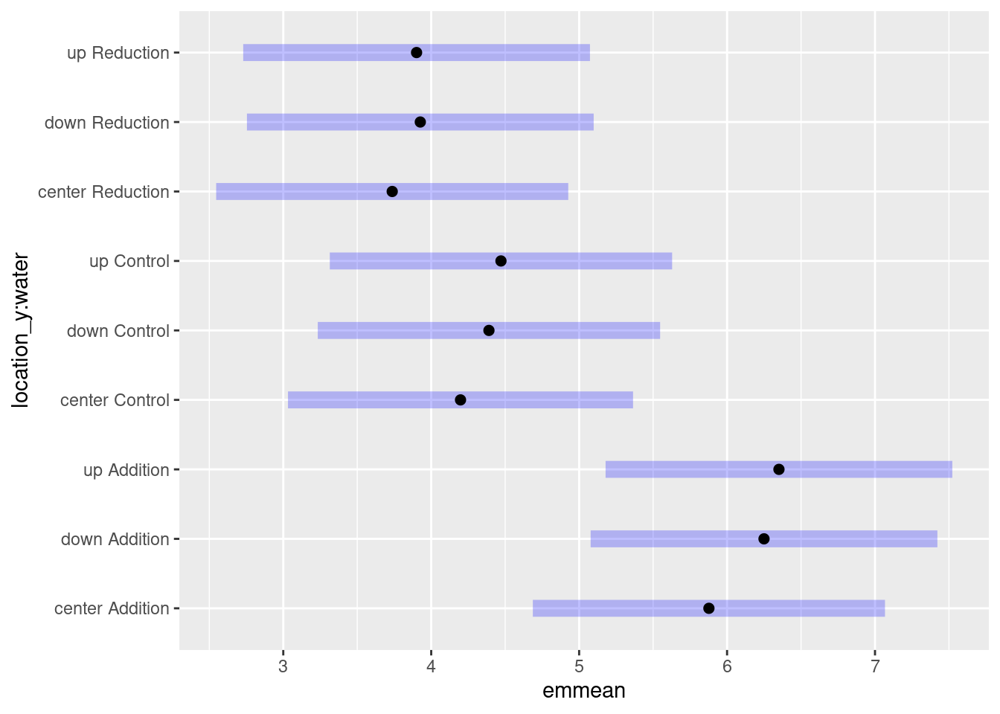
sm.mod.split <- lmer(VWC ~ year * snow * water + (1|snow:plot) + (1|snow:plotid) + (1|date), data=mutate(sm, date=factor(date)))
sjPlot::plot_model(sm.mod.split, type="re")[[1]]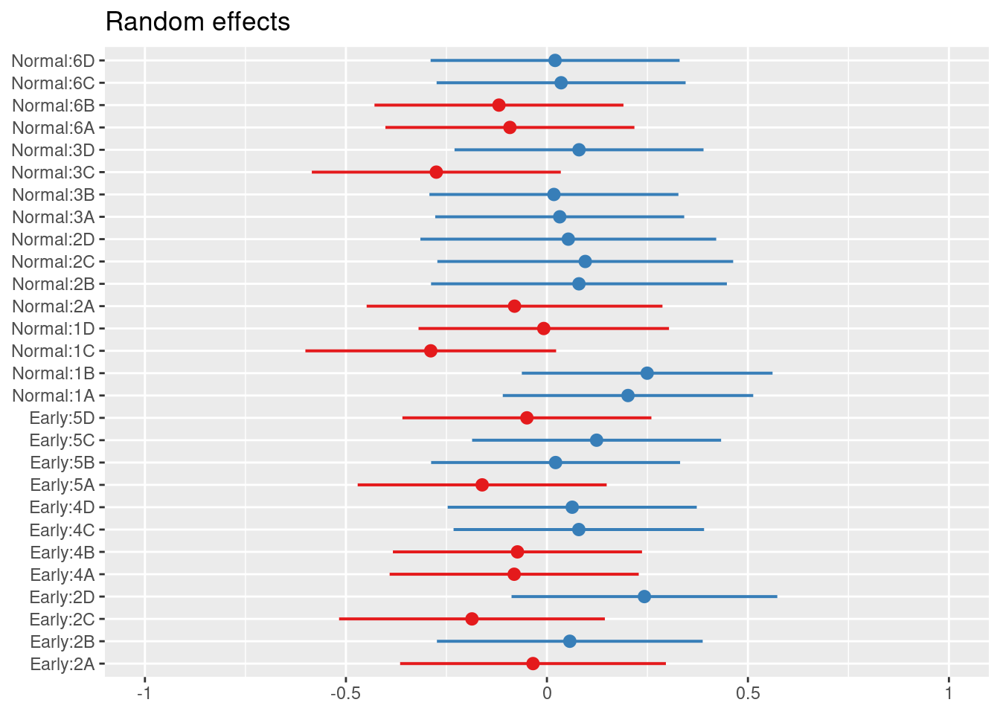
[[2]]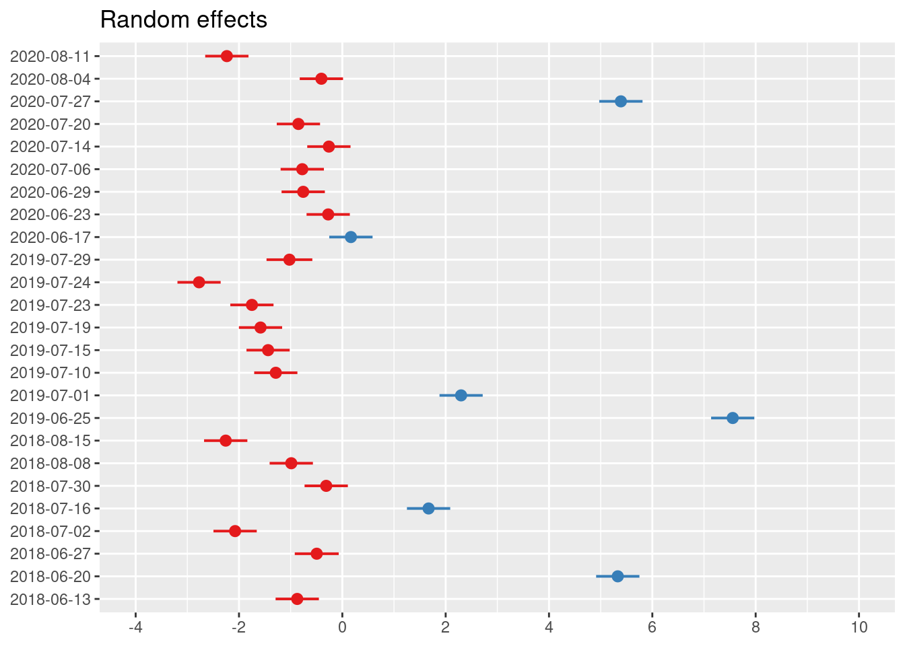
[[3]]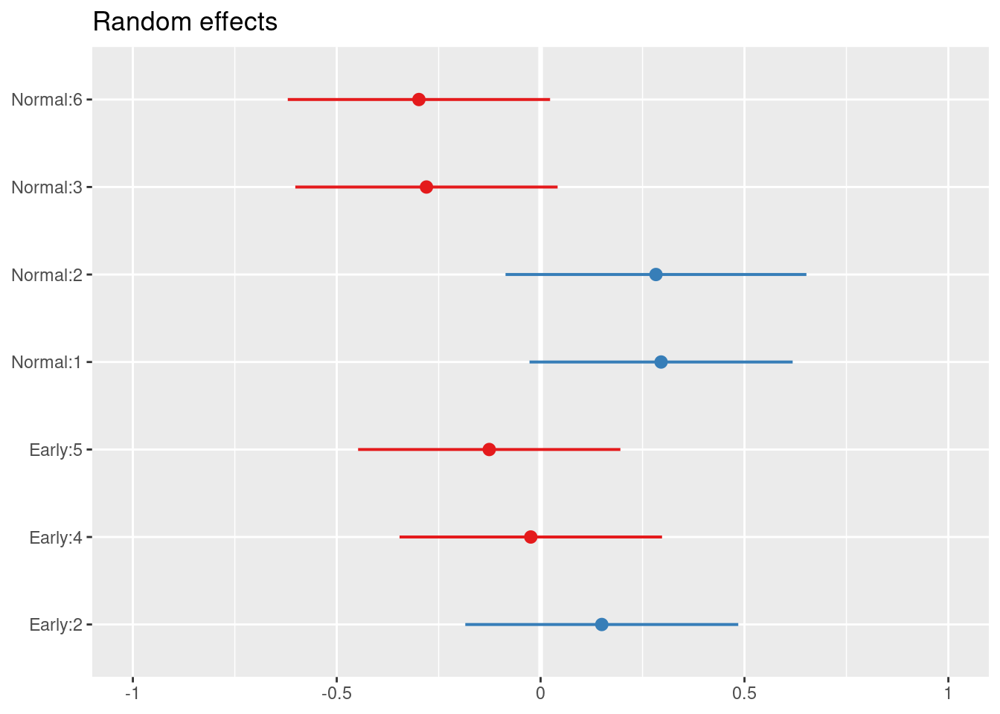
ggplot(sm.subplotyear, aes(x=water, color=snow, y=VWC)) +
facet_wrap(vars(year)) +
geom_point(position=position_dodge(0.9)) +
#geom_pointrange(data=emmeans(sm.mod, ~ snow * water * year, lmer.df = "satterthwaite") %>%
# summary %>% rename(VWC=emmean), shape=1, size=2, fatten=1.5,aes(ymin=VWC-SE, ymax=VWC+SE),
# position=position_dodge2(0.9)) +
geom_pointrange(data=emmeans(sm.mod.split, ~ snow * water * year, lmer.df = "satterthwaite") %>%
summary %>% rename(VWC=emmean), shape=3, aes(ymin=VWC-SE, ymax=VWC+SE),
position=position_dodge2(0.9)) +
scale_color_manual(values=snow_pal) + scale_x_discrete(guide=guide_axis(angle=90))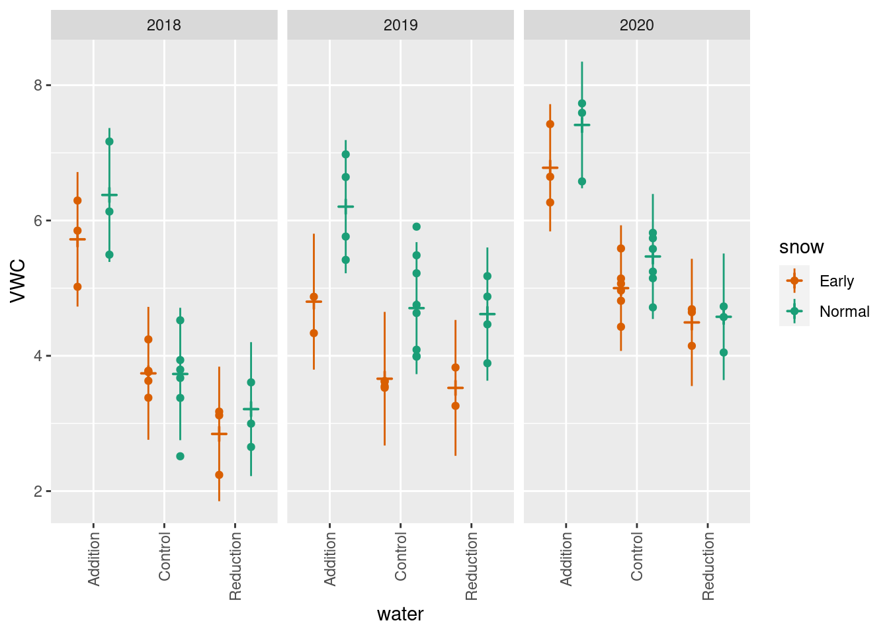
sm.mod.abs <- lmer(VWC ~ sun_date * water + (1|plot) + (1|plotid) + (1|date), data=mutate(sm, date=factor(date)))
anova(sm.mod.abs) %>% kable(digits=3)| Sum Sq | Mean Sq | NumDF | DenDF | F value | Pr(>F) | |
|---|---|---|---|---|---|---|
| sun_date | 61.750 | 61.750 | 1 | 337.689 | 16.377 | 0 |
| water | 313.631 | 156.816 | 2 | 2004.183 | 41.589 | 0 |
| sun_date:water | 145.603 | 72.801 | 2 | 2940.672 | 19.308 | 0 |
sjPlot::plot_model(sm.mod.abs, type="int")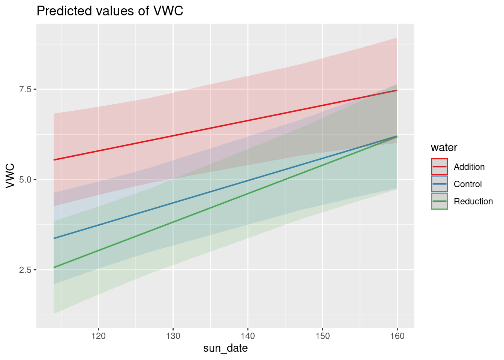
Plant vs. subplot level
ggplot(pt, aes(x=VWC.sm, y=VWC.plant, shape=year, group=year, color=as.integer(date_diff))) + geom_smooth(se=F) +geom_point() + geom_abline(intercept=0, slope=1) +
labs(x="Subplot VWC at closest date", y="VWC measured at plant for physiology", color="Date difference", shape="Year") +
scale_color_viridis_c() + theme_minimal() + coord_fixed()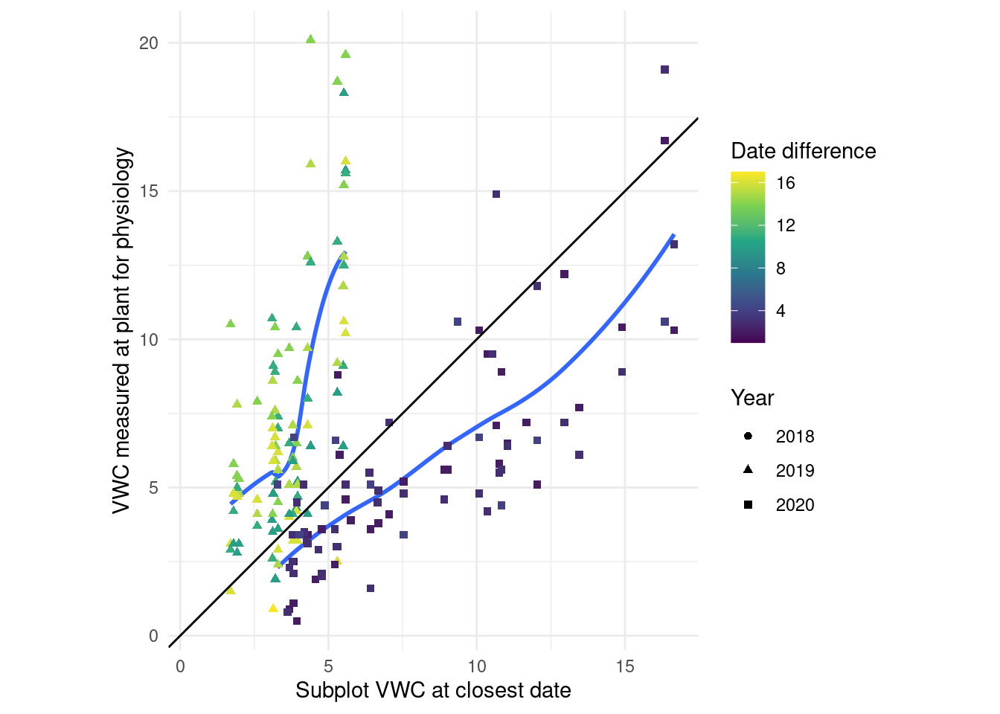
ggplot(pt, aes(x=VWC.sm.year, y=VWC.sm, shape=year, group=year, color=year)) + geom_smooth(se=F) +geom_point() + geom_abline(intercept=0, slope=1) +
labs(x="Mean subplot VWC across year", y="Subplot VWC at closest date", color="Year", shape="Year") +
scale_color_manual(values=year_pal) + theme_minimal() + coord_fixed()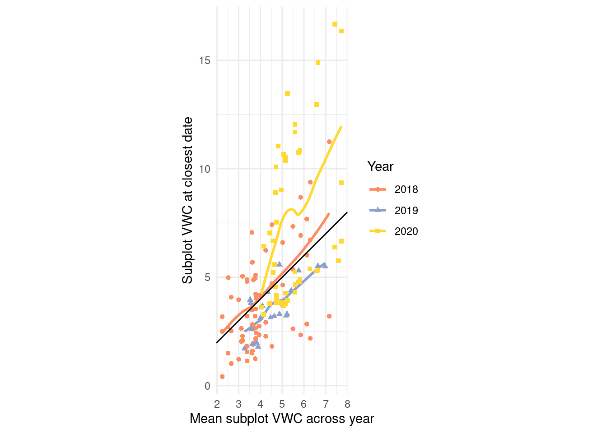
ggplot(pt, aes(x=VWC.sm.year, y=VWC.plant, shape=year, group=year, color=year)) + geom_smooth(se=F) +geom_point() + geom_abline(intercept=0, slope=1) +
labs(x="Mean subplot VWC across year", y="VWC measured at plant for physiology", color="Year", shape="Year") +
scale_color_manual(values=year_pal) + theme_minimal() + coord_fixed()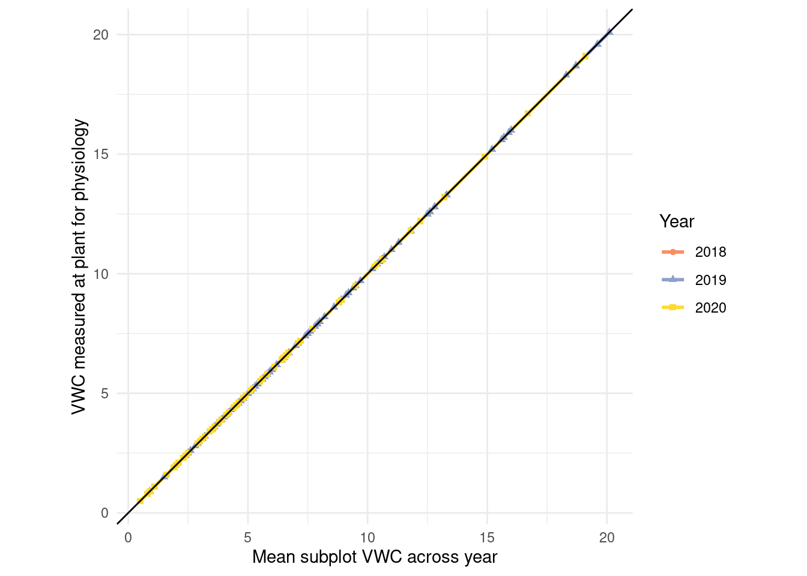
Timing of measurements
plot_timings <- function(data) {
timings_labels <- c(snowcloth="Snow cloths applied to early plots",
meltdates="Mean snowmelt timing in early & unmanipulated plots",
waterdates="Summer precipitation treatments applied",
sm="Soil moisture recorded", ph="Inflorescence height recorded",
mt="Floral morphology recorded", nt="Nectar traits recorded",
pt= "Physiology traits recorded", lt="Leaf traits recorded",
sds="Flower collection period")
data %>% mutate(variable=fct_reorder(variable, begin, na.rm=T, .desc=T),
drawline = ifelse(variable %in% c("lt","meltdates"), NA, TRUE)) %>%
ggplot(aes(y=variable, color=year))+
geom_linerange(aes(xmin=begin, xmax=end, linetype=drawline),
position = position_dodge2(width=0.7, reverse = T), size=1.2, show.legend=FALSE) +
geom_text(data=data %>% drop_na(plots) %>% filter(year=="2019"),
aes(x = end+7, label=paste(ifelse(nchar(plots)>1, "Plots","Plot"), str_replace(plots,","," & "))),
position = position_dodge2(width=0.8, reverse = T), size=4, hjust=0, show.legend=FALSE)+
geom_point(aes(x=begin), position = position_dodge2(width=0.7, reverse = T), shape=15, size=2)+
geom_point(aes(x=end), position = position_dodge2(width=0.7, reverse = T), shape=15, size=2) +
scale_color_manual("Year", values=year_pal, guide=guide_legend(override.aes = list(size=5))) +
scale_y_discrete("", labels=timings_labels)+
scale_x_continuous("Day of year", breaks=seq(80,240, by=20)) +
theme_minimal() + theme(legend.position = "top")
}
plot_timings(filter(timings, !variable %in% c("sds","lt","pt")))
plot_timings(filter(timings, !variable %in% c("sds","mt","nt","ph")))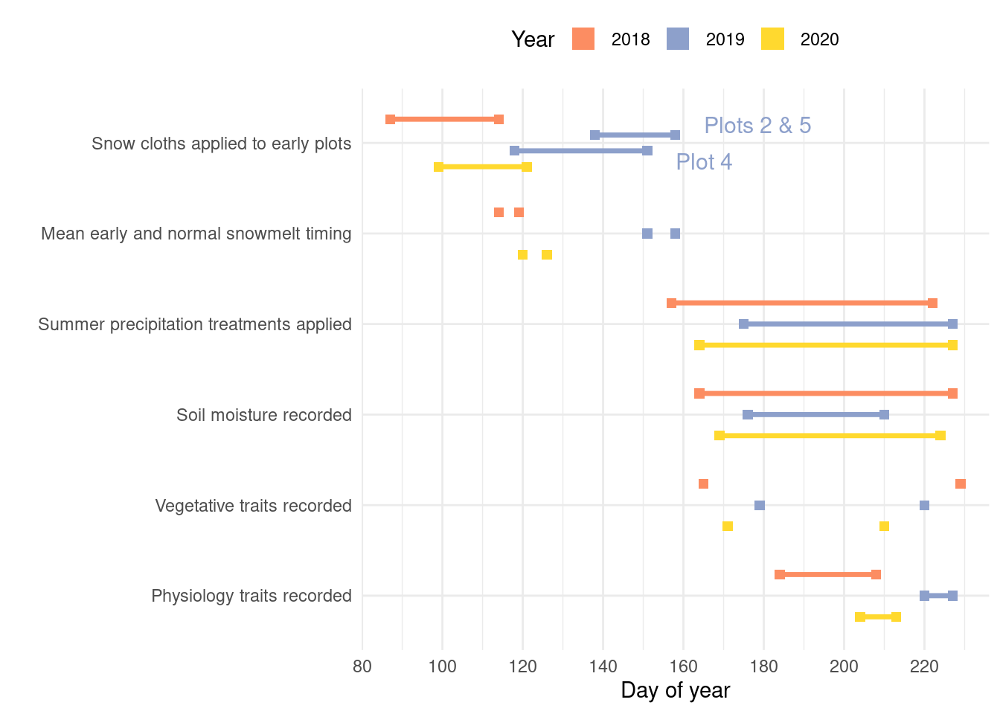
Sample sizes
cat("Morphology measurements per plant:", mt %>% drop_na(corolla_length) %>% group_by(year, plantid) %>% tally() %>% ungroup() %>% summarize(n=mean(n)) %>% pull(n) %>% round(2))Morphology measurements per plant: 2.42cat("Nectar measurements per plant:", mt %>% drop_na(nectar_24_h_ul) %>% group_by(year, plantid) %>% tally() %>% ungroup() %>% summarize(n=mean(n)) %>% pull(n) %>% round(2))Nectar measurements per plant: 1.72cat("Inflo height measurements per plant:")Inflo height measurements per plant:ph %>% drop_na(height_cm) %>% group_by(year, plantid) %>% tally() %>% summarize(n=mean(n)) %>% kable| year | n |
|---|---|
| 2018 | 3.191388 |
| 2019 | 1.662100 |
| 2020 | 3.390244 |
ph %>% drop_na(height_cm) %>% group_by(year, plantid) %>% tally() %>%
ggplot(aes(x=n, fill=year)) + geom_histogram() + labs(title = "Phenology entries per plant", x="Entries",y="Count")+
facet_wrap(vars(year), ncol=1) + scale_fill_manual(values=year_pal)
#Total sample sizes of plants per year - not unique plants
mt %>% drop_na(corolla_length) %>% group_by(plantid) %>% tally() %>% ungroup %>% tally() %>% pull(n)[1] 484mt %>% drop_na(corolla_length, anther_min) %>% group_by(year, plantid) %>% tally() %>% ungroup %>% tally() %>% pull(n)[1] 494mt %>% drop_na(nectar_24_h_ul) %>% group_by(year, plantid) %>% tally() %>% ungroup %>% tally() %>% pull(n)[1] 432sds %>% drop_na(flowers_est) %>% group_by(year, plantid) %>% tally() %>% ungroup %>% tally() %>% pull(n)[1] 610ph %>% drop_na(height_cm) %>% group_by(year, plantid) %>% tally() %>% ungroup %>% tally() %>% pull(n)[1] 674pt %>% drop_na(photosynthesis, conductance) %>% group_by(year, plantid) %>% tally() %>% ungroup %>% tally() %>% pull(n)[1] 315#How many plants flowered twice?
with(cen.status, table(flowering_status_18 + flowering_status_19 + flowering_status_20))
0 1 2
499 548 22 Census
Census status
The annual census at the beginning of the summer contains information on mortality, flowering status, and plant size (longest leaf and number of leaves for each rosette).
Visualize a plant’s status in each census
ggplot(cen.size.long %>% filter(census!="2018r2"), aes(x=census, y=n_rosettes, group=plantid))+geom_path()+ geom_point() + scale_y_continuous(breaks=0:10)
ggplot(cen.status.long, aes(y=plantid, x=census, fill=status)) + geom_tile() +
scale_fill_manual(values=brewer.pal(8, name="Set1")[c(1,3,5,2,7,6)])+
theme(axis.text.y=element_blank(), axis.ticks = element_blank()) +
labs(fill="Status", x="Census year",y="Plant ID")
ggplot(megatally.status.long, aes(y=plantid, x=dataset, fill=status)) + geom_tile() +
scale_fill_manual(values=c(brewer.pal(5, name="Set1")[c(1,3,5,2)],brewer.pal(8, "Set2")[7:8]))+
scale_x_discrete(position="top") +
theme(axis.text.y=element_blank(), axis.ticks = element_blank(), axis.text.x = element_text(angle=90, size=14)) +
labs(fill="Status", x="Dataset and year",y="Plant ID")
Status vs. treatment
cen.status.long %>% left_join(treatments) %>% drop_na(water, snow) %>% filter(status %in% status_ok, census !="2018r2") %>%
ggplot(aes(x=water, fill=status)) + facet_grid(snow ~ census, labeller=labeller(.cols=label_both)) + geom_bar(position="fill") +
scale_fill_manual(values=status_pal) + labs(x="Precipitation", y="Proportion", fill="Status")
Status transitions vs. treatment
What did plants of a given status in one year look like in the next?
with(cen.status, table(`2018`=paste(status_18), `2019`=paste(status_19))) 2019
2018 dead_nf flowering no_record tagnf vegetative
dead_nf 10 0 0 2 0
flowering 151 4 0 0 22
no_record 0 3 60 0 1
vegetative 193 193 1 23 545cen.status %>% mutate(year = "2018") %>% left_join(treatments) %>% filter(status_18 %in% status_ok[-3], status_19 %in% status_ok) %>%
ggplot(aes(x=water, fill=status_19)) + facet_wrap(status_18 ~ snow, labeller=labeller(.cols=label_both)) +
labs(y="2019 Status", fill="2019 Status", x="Precipitation") +
geom_bar(position="fill") + scale_fill_manual(values=status_pal) + theme_minimal()
with(cen.status, table(`2019`=paste(status_19), `2020`=paste(status_20))) 2020
2019 dead_nf flowering no_record tagnf vegetative
dead_nf 352 0 0 2 0
flowering 166 14 0 0 20
no_record 53 1 0 4 3
tagnf 8 0 8 9 0
vegetative 122 207 14 34 191cen.status %>% mutate(year = "2019") %>% left_join(treatments) %>% filter(status_19 %in% status_ok[-3], status_20 %in% status_ok) %>%
ggplot(aes(x=water, fill=status_20)) + facet_wrap(status_19 ~ snow, labeller=labeller(.cols=label_both)) +
labs(y="2020 Status", fill="2020 Status", x="Precipitation") +
geom_bar(position="fill") + scale_fill_manual(values=status_pal) + theme_minimal()
#Model effect of treatments on survival and flowering of vegetative plants - both years combined
cen.status.veg1819 <- bind_rows(
`2018`=cen.status %>% filter(status_18=="vegetative") %>% drop_na(alive_status_19, flowering_status_19) %>% mutate(year="2018") %>%
left_join(treatments) %>% select(alive_status = alive_status_19, flowering_status = flowering_status_19, water, snow, plot, plotid),
`2019`=cen.status %>% filter(status_19=="vegetative") %>% drop_na(alive_status_20, flowering_status_20) %>% mutate(year="2019") %>%
left_join(treatments) %>% select(alive_status = alive_status_20, flowering_status = flowering_status_20, water, snow, plot, plotid), .id="year")
# could now also use cen.status.long %>% filter(status=="vegetative", census %in% c("2018","2019"))
library(glmmTMB)
options(contrasts = c("contr.sum", "contr.poly"))
(survival1819.mod <- glmmTMB(alive_status ~ year * water * snow + (1|snow:plot) + (1|snow:plotid), data=cen.status.veg1819, family=binomial))Formula:
alive_status ~ year * water * snow + (1 | snow:plot) + (1 | snow:plotid)
Data: cen.status.veg1819
AIC BIC logLik df.resid
1505.3830 1579.3032 -738.6915 1437
Random-effects (co)variances:
Conditional model:
Groups Name Std.Dev.
snow:plot (Intercept) 6.857e-05
snow:plotid (Intercept) 4.848e-01
Number of obs: 1451 / Conditional model: snow:plot, 7; snow:plotid, 28
Fixed Effects:
Conditional model:
(Intercept) year1 water1 water2
1.35622 0.17707 0.14713 -0.12265
snow1 year1:water1 year1:water2 year1:snow1
-0.08025 -0.12348 -0.07376 0.08297
water1:snow1 water2:snow1 year1:water1:snow1 year1:water2:snow1
-0.14665 -0.05828 -0.37679 -0.03698 car::Anova(survival1819.mod, type=3) %>% kable(digits=3)| Chisq | Df | Pr(>Chisq) | |
|---|---|---|---|
| (Intercept) | 109.392 | 1 | 0.000 |
| year | 4.678 | 1 | 0.031 |
| water | 0.839 | 2 | 0.657 |
| snow | 0.390 | 1 | 0.532 |
| year:water | 2.377 | 2 | 0.305 |
| year:snow | 1.032 | 1 | 0.310 |
| water:snow | 1.141 | 2 | 0.565 |
| year:water:snow | 12.176 | 2 | 0.002 |
emmeans(survival1819.mod, ~ year * water * snow) %>% as_tibble %>%
mutate(prob=plogis(emmean), uSE = plogis(emmean+SE), lSE = plogis(emmean-SE)) %>%
ggplot(aes(x=water, color=snow, y=prob))+ facet_wrap(vars(year))+
geom_pointrange(aes(ymin=lSE, ymax=uSE), position=position_dodge2(0.9)) +
labs(x="Precipitation", y="Survival to next year", color="Snowmelt")+
scale_y_continuous(limits=c(0,1)) + scale_color_manual(values=snow_pal) + theme_minimal()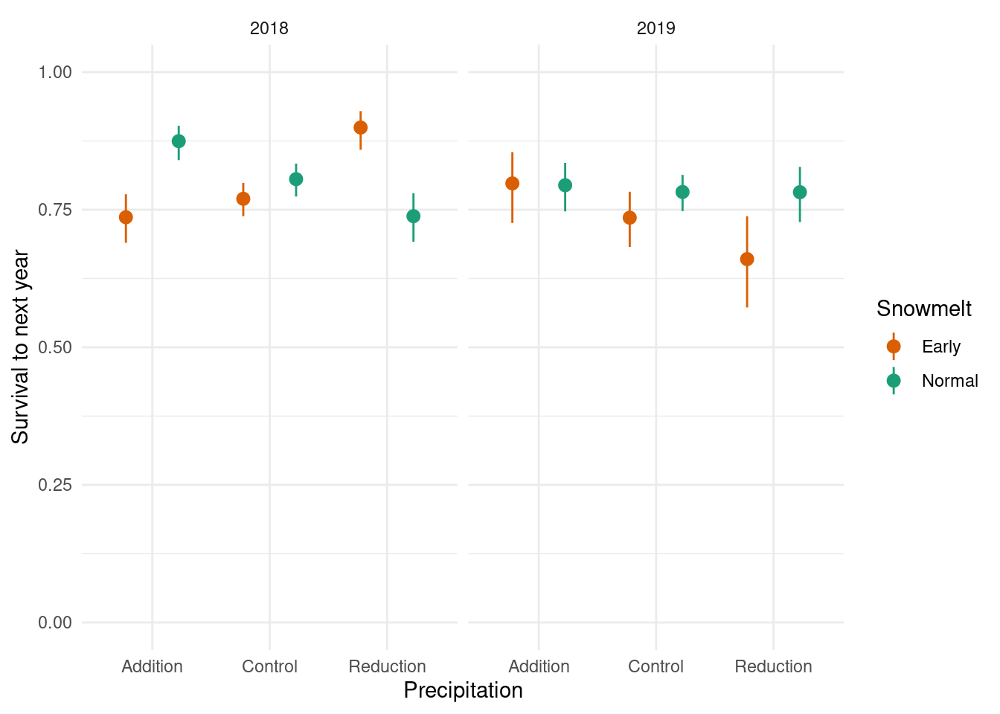
(flowering1819.mod <- glmmTMB(flowering_status ~ year * water * snow + (1|snow:plot) + (1|snow:plotid), data=cen.status.veg1819, family=binomial))Formula:
flowering_status ~ year * water * snow + (1 | snow:plot) + (1 |
snow:plotid)
Data: cen.status.veg1819
AIC BIC logLik df.resid
1621.1206 1695.0407 -796.5603 1437
Random-effects (co)variances:
Conditional model:
Groups Name Std.Dev.
snow:plot (Intercept) 0.3481
snow:plotid (Intercept) 0.2739
Number of obs: 1451 / Conditional model: snow:plot, 7; snow:plotid, 28
Fixed Effects:
Conditional model:
(Intercept) year1 water1 water2
-0.81961 -0.47774 0.26124 -0.31656
snow1 year1:water1 year1:water2 year1:snow1
0.01340 -0.12208 0.04408 0.09788
water1:snow1 water2:snow1 year1:water1:snow1 year1:water2:snow1
-0.08579 0.10402 -0.22026 0.09415 car::Anova(flowering1819.mod, type=3) %>% kable(digits=3)| Chisq | Df | Pr(>Chisq) | |
|---|---|---|---|
| (Intercept) | 25.582 | 1 | 0.000 |
| year | 41.196 | 1 | 0.000 |
| water | 8.314 | 2 | 0.016 |
| snow | 0.007 | 1 | 0.934 |
| year:water | 1.361 | 2 | 0.506 |
| year:snow | 1.751 | 1 | 0.186 |
| water:snow | 0.882 | 2 | 0.643 |
| year:water:snow | 4.551 | 2 | 0.103 |
emmeans(flowering1819.mod, ~ year * water * snow) %>% as_tibble %>%
mutate(prob=plogis(emmean), uSE = plogis(emmean+SE), lSE = plogis(emmean-SE)) %>%
ggplot(aes(x=water, color=snow, y=prob))+ facet_wrap(vars(year))+
geom_pointrange(aes(ymin=lSE, ymax=uSE), position=position_dodge2(0.9)) +
labs(x="Precipitation", y="Flowering the next year", color="Snowmelt")+
scale_y_continuous(limits=c(0,1)) + scale_color_manual(values=snow_pal) + theme_minimal()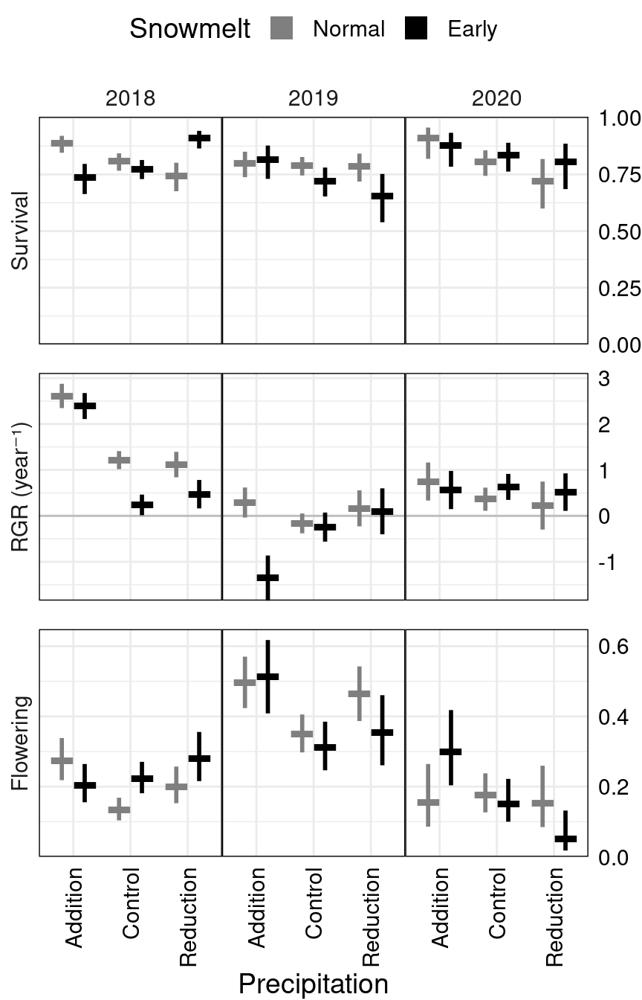
Survival and flowering vs. vegetative plant size
ggplot(filter(cen, status_19 %in% status_ok, status_18 == "vegetative"), aes(x=r1_longest_18, fill=status_19)) +
facet_wrap(vars(status_19), ncol=1) + labs(x="2018 Rosette 1 Longest Leaf (mm)", fill="2019 status") +
geom_density() + scale_fill_manual(values=status_pal) + coord_cartesian(xlim=c(0, 85))
ggplot(filter(cen, status_20 %in% status_ok, status_19 == "vegetative"), aes(x=r1_longest_19, fill=status_20)) +
facet_wrap(vars(status_20), ncol=1) + labs(x="2019 Rosette 1 Longest Leaf (mm)", fill="2020 status") +
geom_density() + scale_fill_manual(values=status_pal) + coord_cartesian(xlim=c(0, 85))
ggplot(filter(cen, status_19 %in% status_ok, status_18 == "vegetative"), aes(x=r1_leaves_18, fill=status_19)) +
facet_wrap(vars(status_19), ncol=1) + labs(x="2018 Rosette 1 # Leaves", fill="2019 status") +
geom_density() + scale_fill_manual(values=status_pal) + coord_cartesian(xlim=c(0, 100))
ggplot(filter(cen, status_20 %in% status_ok, status_19 == "vegetative"), aes(x=r1_leaves_19, fill=status_20)) +
facet_wrap(vars(status_20), ncol=1) + labs(x="2019 Rosette 1 # Leaves", fill="2020 status") +
geom_density() + scale_fill_manual(values=status_pal) + coord_cartesian(xlim=c(0, 100))
Plant growth vs. treatments
Only includes plants that remained vegetative and did not die or flower.
cen %>% drop_na(water_18, snow_18) %>% filter(status_18=="vegetative", status_19=="vegetative") %>%
ggplot(aes(x=r1_longest_18, y=r1_longest_19, color=water_18, shape=snow_18)) + geom_point() + geom_abline(intercept=0, slope=1) +
scale_color_manual(values=water_pal) + theme_minimal()+coord_fixed(xlim=c(0,80), ylim=c(0,80)) +
labs(x="2018 Rosette 1 Longest Leaf (mm)", y="2019 Rosette 1 Longest Leaf (mm)", color="Precipitation", shape="Snowmelt")
cen %>% drop_na(water_19, snow_19) %>% filter(status_19=="vegetative", status_20=="vegetative") %>%
ggplot(aes(x=r1_longest_19, y=r1_longest_20, color=water_19, shape=snow_19)) + geom_point() + geom_abline(intercept=0, slope=1) +
scale_color_manual(values=water_pal) + theme_minimal()+ coord_fixed(xlim=c(0,80), ylim=c(0,80)) +
labs(x="2019 Rosette 1 Longest Leaf (mm)", y="2020 Rosette 1 Longest Leaf (mm)", color="Precipitation", shape="Snowmelt")
cen %>% drop_na(water_18, snow_18) %>% filter(status_18=="vegetative", status_19=="vegetative") %>%
ggplot(aes(x=r1_leaves_18, y=r1_leaves_19, color=water_18, shape=snow_18)) + geom_point() + geom_abline(intercept=0, slope=1) +
scale_color_manual(values=water_pal) + theme_minimal()+coord_fixed(xlim=c(0,100), ylim=c(0,100)) +
labs(x="2018 Rosette 1 # Leaves", y="2019 Rosette 1 # Leaves", color="Precipitation", shape="Snowmelt")
cen %>% drop_na(water_19, snow_19) %>% filter(status_19=="vegetative", status_20=="vegetative") %>%
ggplot(aes(x=r1_leaves_19, y=r1_leaves_20, color=water_19, shape=snow_19)) + geom_point() + geom_abline(intercept=0, slope=1) +
scale_color_manual(values=water_pal) + theme_minimal()+ coord_fixed(xlim=c(0,100), ylim=c(0,100)) +
labs(x="2019 Rosette 1 # Leaves", y="2020 Rosette 1 # Leaves", color="Precipitation", shape="Snowmelt")
Plant size vs. treatments
ggplot(drop_na(cen18, water, snow), aes(x=water, color=snow, y=r1_longest)) + geom_boxplot() + scale_color_manual(values=snow_pal) + labs(x="Precipitation", y="2018 Rosette 1 Longest Leaf (mm)", color="Snowmelt")
ggplot(drop_na(cen18, water, snow), aes(x=water, color=snow, y=r1_leaves)) + geom_boxplot() + scale_color_manual(values=snow_pal)+ labs(x="Precipitation", y="2018 Rosette 1 # Leaves", color="Snowmelt")
ggplot(drop_na(cen19, water, snow), aes(x=water, color=snow, y=r1_longest)) + geom_boxplot() + scale_color_manual(values=snow_pal) + labs(x="Precipitation", y="2019 Rosette 1 Longest Leaf (mm)", color="Snowmelt")
ggplot(drop_na(cen19, water, snow), aes(x=water, color=snow, y=r1_leaves)) + geom_boxplot() + scale_color_manual(values=snow_pal)+ labs(x="Precipitation", y="2019 Rosette 1 # Leaves", color="Snowmelt")
ggplot(drop_na(cen20, water, snow), aes(x=water, color=snow, y=r1_longest)) + geom_boxplot() + scale_color_manual(values=snow_pal) + labs(x="Precipitation", y="2020 Rosette 1 Longest Leaf (mm)", color="Snowmelt")
ggplot(drop_na(cen20, water, snow), aes(x=water, color=snow, y=r1_leaves)) + geom_boxplot() + scale_color_manual(values=snow_pal) + labs(x="Precipitation", y="2020 Rosette 1 # Leaves", color="Snowmelt")
Leaf traits
with(lt, table(date, plot)) %>% kable| 1 | 2 | 3 | 4 | 5 | 6 | |
|---|---|---|---|---|---|---|
| 2018-06-14 | 16 | 16 | 16 | 16 | 16 | 16 |
| 2018-08-15 | 16 | 16 | 16 | 0 | 0 | 0 |
| 2018-08-17 | 0 | 0 | 0 | 16 | 16 | 16 |
| 2019-06-28 | 9 | 7 | 10 | 11 | 3 | 6 |
| 2019-07-01 | 16 | 16 | 16 | 0 | 0 | 0 |
| 2019-07-02 | 0 | 0 | 0 | 16 | 16 | 16 |
| 2019-08-08 | 16 | 16 | 16 | 16 | 16 | 15 |
| 2020-06-19 | 16 | 13 | 15 | 16 | 10 | 12 |
| 2020-07-28 | 16 | 15 | 16 | 16 | 11 | 15 |
lt %>% group_by(date) %>% mutate(index=row_number(), date=factor(date)) %>%
ggplot(aes(x=index, y=water_content, color=factor(date), group=factor(plot))) +
facet_wrap(vars(paste(year, round, sep=" round "), date)) +
geom_hline(yintercept=0.6) + geom_hline(yintercept=0.85) +
geom_point() + geom_smooth(method="lm", color="black", se=F) +
scale_color_brewer(palette="Set1", direction=-1, guide=F) +
labs(x="Measurement order", y="Water content", color="Plot")
lt %>% pivot_longer(c(trichomes, trichome_density, water_content, sla_wet, sla, leaf_area_cm2), names_to="trait") %>%
ggplot(aes(x=factor(date), y=value, color=factor(date))) + facet_wrap(vars(trait), scales="free_y") + geom_boxplot() +
scale_x_discrete(guide=guide_axis(angle=90)) + labs(x="Date", y="", color="Date") +
scale_color_brewer(palette="Set1", direction = -1, guide=F) + theme(legend.position = "top")
ggplot(lt, aes(x=wet_weight_g, y=dry_weight_g, color=factor(date))) + geom_point() + geom_abline(slope=1, intercept = 0) +
geom_abline(slope=1-median(lt$water_content, na.rm=T), intercept = 0) + geom_smooth(se=F) +
coord_cartesian(xlim=c(0,NA), ylim=c(0, NA)) + labs(x="Wet weight (g)", y = "Dry weight (g)", color="Date") +
scale_color_brewer(palette="Set1", direction=-1) + theme(legend.position="top")
lt %>% pivot_longer(c(wet_weight_g, dry_weight_g, trichomes), names_to="trait") %>%
ggplot(aes(x=leaf_area_cm2, y=value, color=factor(date))) + facet_wrap(vars(trait), scales="free_y", ncol=1) +
geom_point(size=0.7) + geom_smooth(se=F) + labs(x="Leaf area (cm2)", y="", color="Date") +
scale_color_brewer(palette="Set1", direction=-1)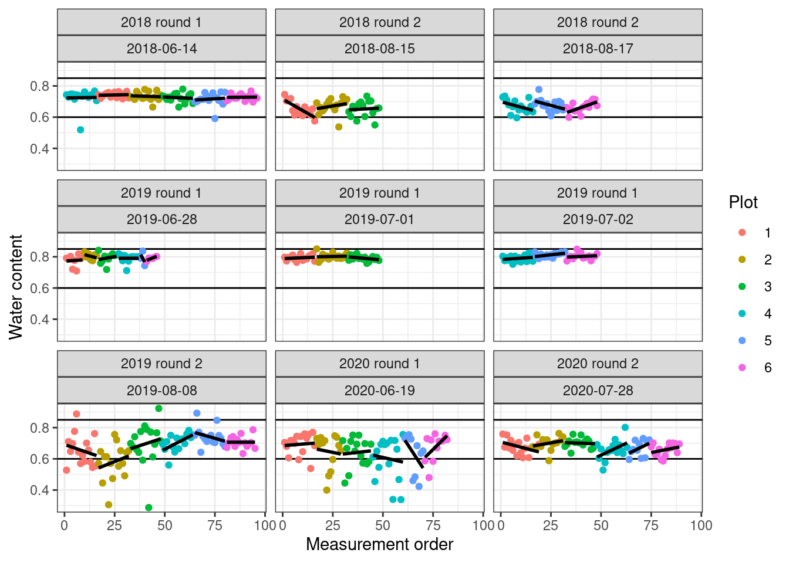
lt %>% pivot_longer(c(trichome_density, sla_wet, sla, water_content), names_to="trait") %>%
ggplot(aes(x=leaf_area_cm2, y=value, color=factor(date))) + facet_wrap(vars(trait), scales="free_y") +
geom_point(size=0.7) + geom_smooth(se=F) + labs(x="Leaf area (cm2)", y="", color="Date") +
scale_color_brewer(palette="Set1", direction=-1) +
theme(legend.position = "top")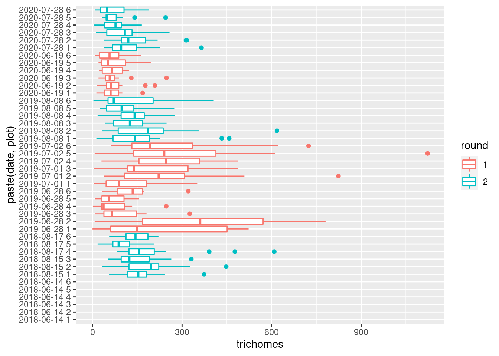
library(ggfortify)
lt %>% mutate(id = paste0(str_sub(year(date),3,4), month(date), day(date), "-",plantid),
id = ifelse(id=="20728-3C162" & trichomes==120, "20728-3C162B", id)) %>% #two leaves collected
select(id, wet_weight_g, dry_weight_g, leaf_area_cm2) %>% column_to_rownames("id") %>% drop_na() %>%
prcomp(scale=T) %>%
autoplot(data = lt %>% mutate(date=factor(date)) %>% drop_na(wet_weight_g, dry_weight_g, leaf_area_cm2),
colour = "date",
loadings = TRUE, loadings.colour="black", loadings.label = TRUE, loadings.label.colour="black",
shape=F, frame=T) + theme(legend.position = "top") +
scale_color_brewer("Date", palette="Set1", direction=-1) + scale_fill_brewer("Date",palette="Set1", direction=-1)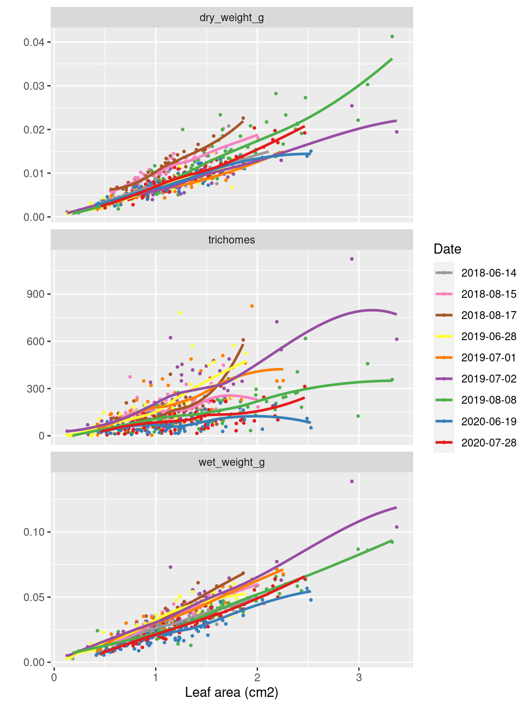
Physiology traits
# plot all the LICOR variables by date
licor_date_pal <- sample(rainbow(nlevels(factor(licor$date))))
licor %>% pivot_longer(Photo:StableF) %>% mutate(index=row_number()) %>% filter(!name %in% c("Area","BLC_1","BLCond","StmRat")) %>%
ggplot(aes(x=index, y= value, color=factor(date), shape=year)) + facet_wrap(vars(name), scales="free_y", ncol=4) + geom_point() + scale_color_manual(values=licor_date_pal, guide=F) + theme_dark() + labs(x="Measurement", y="", shape="Year")
licor %>% ggplot(aes(x=Cond, y= Photo, color=Ci>0, shape=year)) + geom_point()
licor %>% filter(Ci>0) %>% ggplot(aes(x=Cond, y= Photo, color=factor(date), linetype=year, shape=year)) + geom_point() + geom_smooth(method="lm", se=F) + scale_linetype_manual(values=c(3,1,4)) + scale_color_manual(values=licor_date_pal, guide=F) + theme_dark()
licor %>% filter(Ci>0) %>% ggplot(aes(y=Photo/Cond, x=factor(date), color=year)) + geom_boxplot(size=1.5) +
scale_color_manual(values=year_pal) + scale_x_discrete(guide = guide_axis(angle = 90)) + theme_minimal()
licor %>% filter(Ci>0) %>% left_join(treatments)%>% ggplot(aes(y=Photo/Cond, x=factor(date), color=water)) +
geom_boxplot(position=position_dodge2(preserve="single")) +
scale_color_manual(values=water_pal) + scale_x_discrete(guide = guide_axis(angle = 90)) + theme_minimal()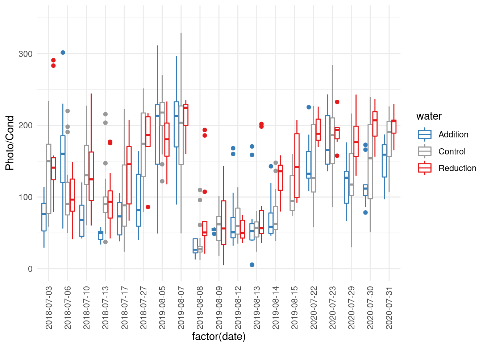
pt %>% ggplot(aes(x=conductance, y= photosynthesis, color=factor(date), linetype=year, shape=year)) + geom_point() + geom_smooth(method="lm", se=F) + scale_linetype_manual(values=c(3,1,4)) + scale_color_manual(values=licor_date_pal, guide=F) + theme_dark()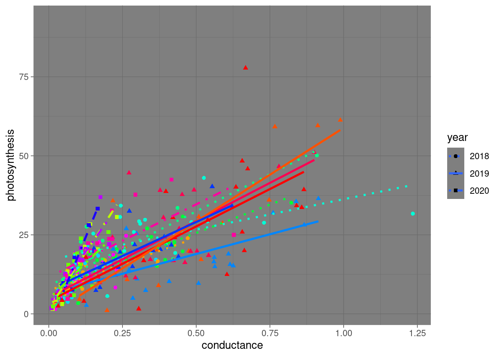
pt %>% select(date, plantid, photosynthesis, conductance, WUE, notes) %>%
filter(is.na(conductance)) %>% mutate(conductance = photosynthesis/WUE) %>% kable| date | plantid | photosynthesis | conductance | WUE | notes |
|---|---|---|---|---|---|
| 2019-08-09 | 1C75 | 81.2902 | 1.127246 | 72.114 | NA |
| 2019-08-09 | 2C271 | 27.2569 | 1.249571 | 21.813 | NA |
| 2019-08-09 | 3C129 | 92.9856 | 1.763763 | 52.720 | NA |
| 2019-08-13 | 4D49 | 65.2322 | 1.154573 | 56.499 | NA |
These conductance entries were blank, filled from WUE. There is another entry with conductance = 1.23 that was not blanked.
Floral traits
Floral trait correlations
mt %>% select(corolla_length, corolla_width, style_length, anther_max, anther_min, sepal_width) %>%
ggpairs()
nt %>% select(nectar_24_h_ul, nectar_conc, nectar_sugar_24_h_mg) %>%
ggpairs()
ggplot(nt, aes(x=nectar_24_h_ul, y = nectar_conc)) + geom_point() + labs(x=traitnames[["nectar_conc"]], y=traitnames[["nectar_24_h_ul"]]) + geom_smooth(se=F)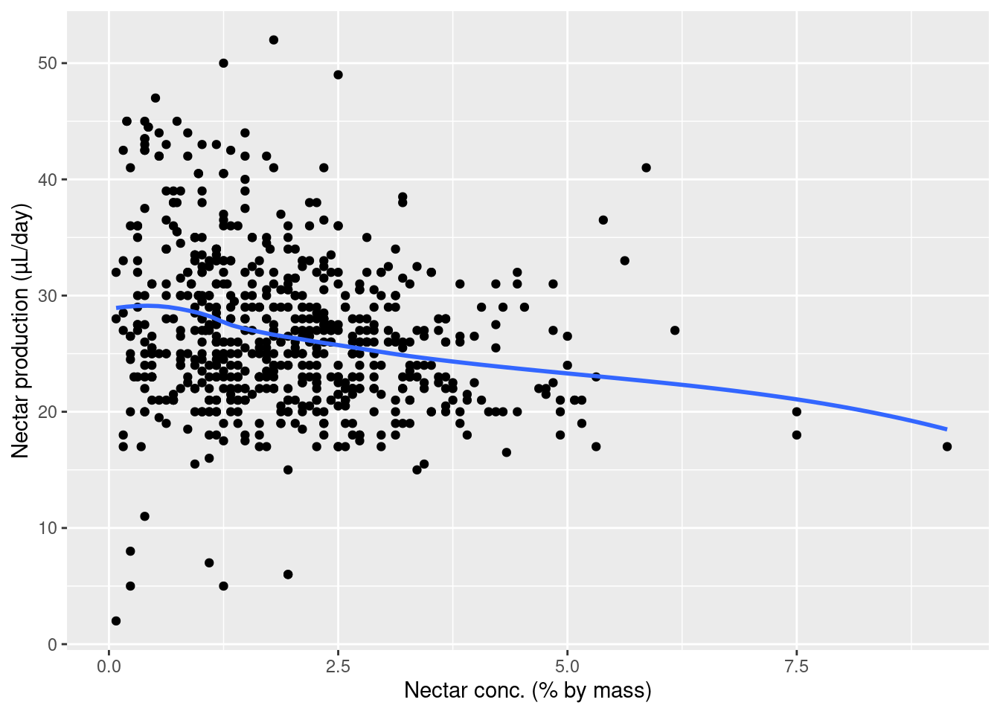
mnps.plantyr %>% select(corolla_length, corolla_width, style_length, anther_max, anther_min, sepal_width, nectar_24_h_ul, nectar_conc, nectar_sugar_24_h_mg, height_cm, flowers_est) %>%
ggcorr(hjust=0.85, layout.exp=2, label=T, label_round=2)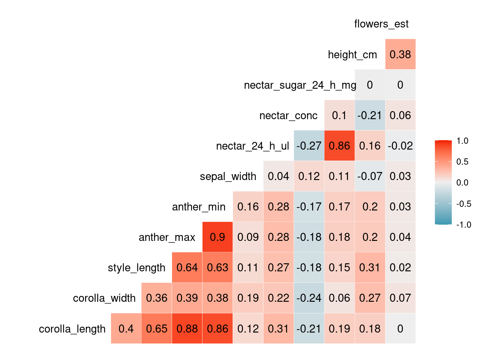
mnps.plantyr %>% select(all_of(seedtraits[c(1,7,2:6)])) %>%
ggcorr(hjust=0.85, layout.exp=2, label=T, label_round=2)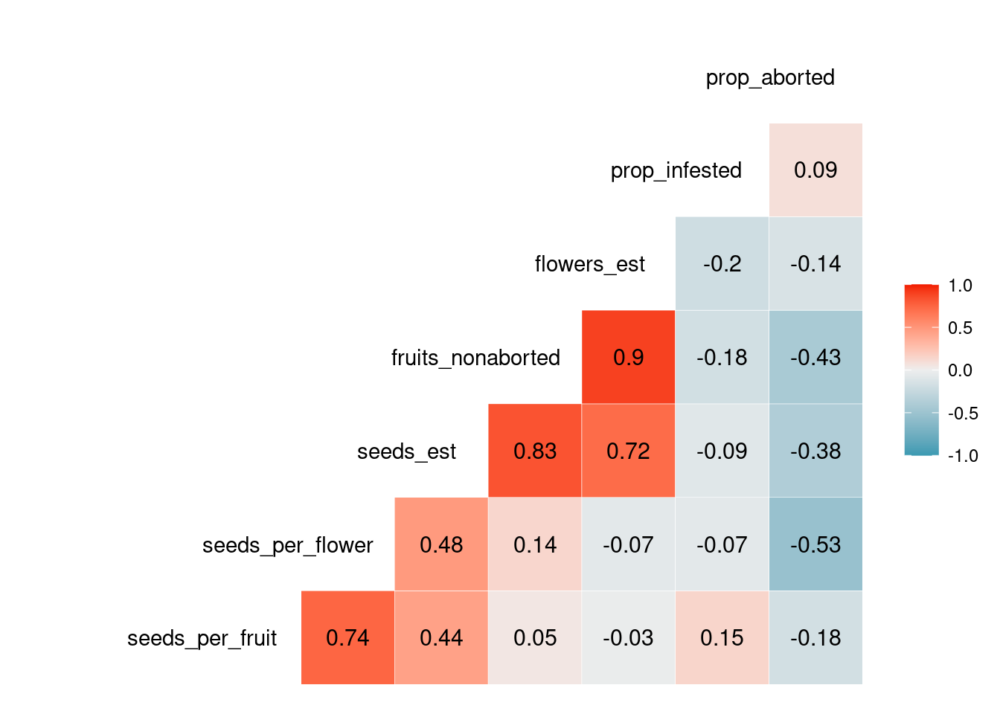
Floral traits within season
No obvious effect of time within a season for corolla length/width or sepal width. The timing of trait measurements was different each year:
ggplot(sm, aes(x=yday(date))) +
facet_wrap(vars(year), ncol=1) +
geom_point(data=ph, aes(y= height_cm/2, color="Phenology (height)"))+
geom_point(data=mt, aes(y= corolla_length, color="Morphology"))+
geom_point(data=mt, aes(y= nectar_24_h_ul, color="Nectar"))+
geom_point(aes(y = VWC, color="Soil moisture")) +
geom_vline(data=meltdates, aes(xintercept=sun_date, linetype=snow), color="grey40")+
labs(x="Day of year", shape="Snow", linetype="Snow", y="", color="Measurement")+
scale_color_manual(values=c("purple","orange","grey","black"))+
scale_x_continuous(breaks=seq(120, 240, by=20))+
scale_linetype_manual(values=c(2,1)) + theme_minimal() +
theme(legend.key.size = unit(1.5, "lines"), axis.text.y=element_blank())
ggplot(data=mt, aes(x=yday(date), y= corolla_length, color=water)) +
facet_wrap(vars(year), ncol=1) +
geom_point()+ geom_smooth(se=F)+
labs(y=traitnames[["corolla_length"]], x="Day of year")+
scale_color_manual(values=water_pal) + theme_minimal()
ggplot(data=mt, aes(x=yday(date), y= nectar_24_h_ul, color=water)) +
facet_wrap(vars(year), ncol=1) +
geom_point()+ geom_smooth(se=F)+
labs(y=traitnames[["nectar_24_h_ul"]], x="Day of year")+
scale_color_manual(values=water_pal) + theme_minimal()
ggplot(data=nt, aes(x=yday(date), y= nectar_conc, color=water)) +
facet_wrap(vars(year), ncol=1) +
geom_point()+ geom_smooth(se=F)+
labs(y=traitnames[["nectar_conc"]], x="Day of year")+
scale_color_manual(values=water_pal) + theme_minimal()
Selection on floral traits
mnps.plantyr %>% select(all_of(c(floraltraits, "seeds_est")), year) %>%
pivot_longer(all_of(floraltraits), names_to="trait") %>%
ggplot(aes(x=value, y=seeds_est, color=year)) + geom_point() + geom_smooth(method="lm",se=F) +
facet_wrap(vars(trait), scales="free_x", labeller=as_labeller(traitnames)) +
labs(x="Trait", y="Seed production", color="year")+
theme_bw() + scale_color_manual(values=year_pal)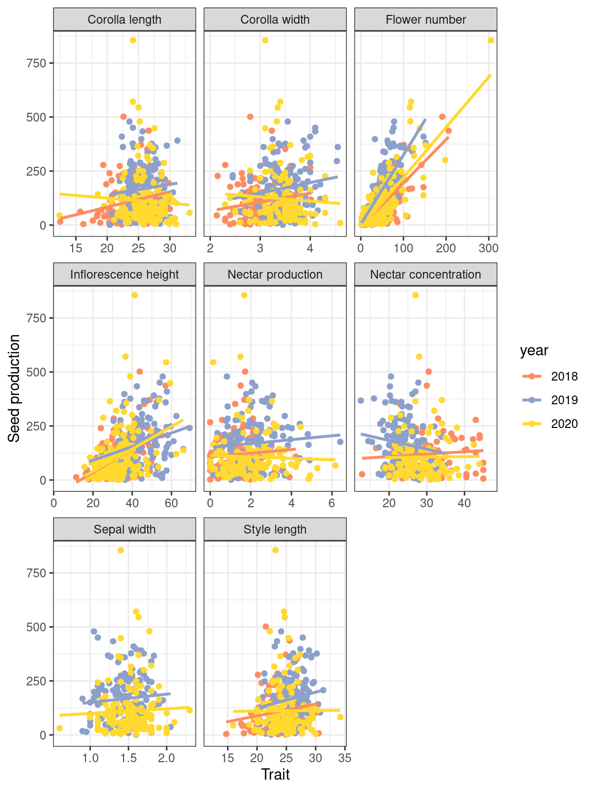
mt.mod.seeds <- map(set_names(floraltraits),
~ lm(seeds_rel ~ trait.z * year,
data=mnps.plantyr %>% mutate(trait.z = mnps.plantyr[[.x]] / alltraits.sd[[.x]]) %>%
group_by(year) %>% mutate(seeds_rel = seeds_est/mean(seeds_est, na.rm=T)))) # mean seeds in each yr
mt.mod.seeds.coefs <- map_dfr(mt.mod.seeds, tidy, .id="trait")
mt.mod.seeds.tests <- map(mt.mod.seeds, car::Anova, type=3) %>% map_dfr(tidy, .id="trait")
mt.mod.seeds.emm <- map_dfr(mt.mod.seeds, ~summary(emtrends(.x, ~1, var="trait.z")), .id="trait")
#get the the standardized selection differential S' (change in relative fitness / standardized trait value)
mt.mod.seeds.coefs %>% filter(term=="trait.z") %>% arrange(estimate)# A tibble: 8 x 6
trait term estimate std.error statistic p.value
<chr> <chr> <dbl> <dbl> <dbl> <dbl>
1 nectar_conc trait.z -0.0223 0.0613 -0.363 7.17e- 1
2 nectar_24_h_ul trait.z 0.0408 0.0551 0.740 4.60e- 1
3 sepal_width trait.z 0.0506 0.0568 0.892 3.73e- 1
4 corolla_length trait.z 0.0759 0.0551 1.38 1.69e- 1
5 corolla_width trait.z 0.0795 0.0571 1.39 1.64e- 1
6 style_length trait.z 0.102 0.0551 1.85 6.54e- 2
7 height_cm trait.z 0.435 0.0497 8.75 4.34e-17
8 flowers_est trait.z 0.691 0.0290 23.8 3.31e-84#See if VWC affects relative fitness
ggplot(mnps.plantyr, aes(x=VWC, y=seeds_est, color=year)) + geom_point() + geom_smooth(method="lm",se=F) +
labs(x="VWC", y="Seed production", color="year")+ theme_bw() + scale_color_manual(values=year_pal)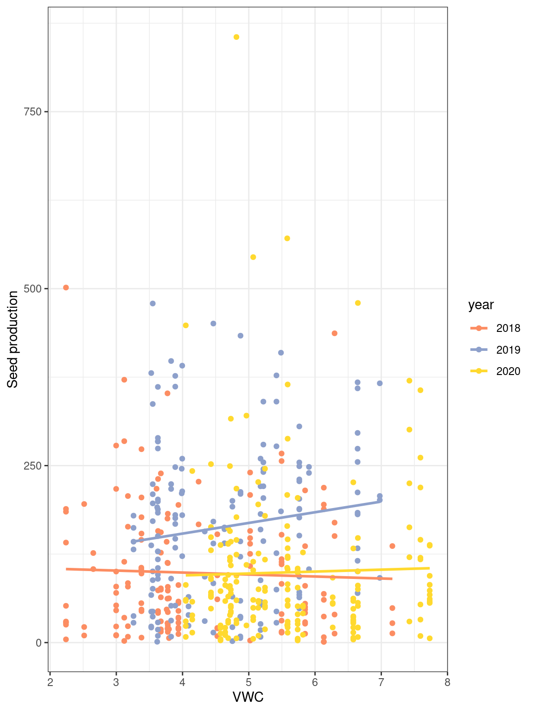
seeds.mod.sm <- lmer(seeds_rel ~ VWC * year + (1|plotid),
data=mnps.plantyr %>% group_by(year) %>% mutate(seeds_rel = seeds_est/mean(seeds_est, na.rm=T)))
anova(seeds.mod.sm, ddf="Ken")Type III Analysis of Variance Table with Kenward-Roger's method
Sum Sq Mean Sq NumDF DenDF F value Pr(>F)
VWC 0.57704 0.57704 1 26.44 0.6682 0.4210
year 1.45716 0.72858 2 407.10 0.8436 0.4309
VWC:year 1.39622 0.69811 2 422.65 0.8083 0.4463emtrends(seeds.mod.sm, ~year, var="VWC") year VWC.trend SE df lower.CL upper.CL
2018 -0.0265 0.0637 151.7 -0.1524 0.0993
2019 0.0957 0.0760 105.5 -0.0550 0.2464
2020 0.0352 0.0663 99.3 -0.0962 0.1667
Degrees-of-freedom method: kenward-roger
Confidence level used: 0.95 Models
Plasticity: water and snowmelt treatments
This is a split-plot analysis, based on the original experimental design. The models use:
- mnps.plantyr, the plant means within each year
- snow, the snowmelt treatment (except for plot 2 in 2019)
- water, the water treatments with mock rainouts and controls combined
- plot as a random effect (subplots vary within this larger unit)
- plotid as a random effect (plants vary within this larger unit)
The models are specified as:
lmer(trait ~ year * snow * water + (1|snow:plot) + (1|snow:plotid), data = mnps.plantyr)ANOVA tables
lt.subplot.r2 <- lt.subplotround %>% filter(round=="2")
lt.plantyr.r2 <- lt.plantyr %>% filter(round=="2")
options(contrasts = c("contr.sum", "contr.poly"))
mod.split <- c(map(set_names(traits),
~ lmer(mnps.plantyr[[.x]] ~ year * snow * water + (1|snow:plot) + (1|snow:plotid),
data=mnps.plantyr)),
map(set_names(leaftraits),
~ lmer(lt.plantyr.r2[[.x]] ~ year * snow * water + (1|snow:plot) + (1|snow:plotid),
data=lt.plantyr.r2)),
map(set_names(phystraits),
~ lmer(pt.plantyr[[.x]] ~ year * snow * water + (1|snow:plot) + (1|snow:plotid) + (1|round),
data=pt.plantyr)))
mod.split.coefs <- map_dfr(mod.split, tidy, .id="trait")
mod.split.tests <- map(mod.split, anova, ddf="Ken") %>% map_dfr(tidy, .id="trait")
mod.split.emm <- map_dfr(mod.split, ~ summary(emmeans(ref_grid(.x), ~ year * snow * water)), .id = "trait")
anova_table(mod.split.tests, mod.split) %>% kable()| trait | year | snow | water | year:snow | year:water | snow:water | year:snow:water | singular | R2m |
|---|---|---|---|---|---|---|---|---|---|
| corolla_length | 1 x 10-18 | 0.89 | 2.5 x 10-3 | 0.99 | 0.15 | 0.73 | 0.89 | TRUE | 0.2280032 |
| style_length | 5 x 10-14 | 0.76 | 2 x 10-2 | 0.98 | 0.10 | 0.93 | 0.28 | TRUE | 0.1847491 |
| corolla_width | 7 x 10-23 | 0.72 | 1.5 x 10-3 | 0.53 | 0.63 | 0.43 | 0.061 | TRUE | 0.3031532 |
| sepal_width | 0.50 | 0.93 | 9 x 10-3 | 0.18 | 3.1 x 10-3 | 0.31 | 0.022 | TRUE | 0.1139739 |
| nectar_24_h_ul | 6.7 x 10-8 | 0.21 | 0.035 | 8.6 x 10-3 | 0.70 | 0.63 | 0.46 | TRUE | 0.1675392 |
| nectar_conc | 5.1 x 10-23 | 0.52 | 7.7 x 10-3 | 0.76 | 0.66 | 0.49 | 0.17 | FALSE | 0.3083012 |
| nectar_sugar_24_h_mg | 3.7 x 10-6 | 0.35 | 0.40 | 0.028 | 0.40 | 0.50 | 0.13 | TRUE | 0.1247425 |
| height_cm | 4.5 x 10-22 | 8 x 10-2 | 0.99 | 0.24 | 0.45 | 0.48 | 0.083 | FALSE | 0.2339607 |
| open | 6.6 x 10-36 | 0.83 | 0.69 | 0.18 | 0.65 | 0.37 | 0.10 | FALSE | 0.2548345 |
| seeds_per_fruit | 4.2 x 10-7 | 0.44 | 0.83 | 0.53 | 0.079 | 0.11 | 0.22 | TRUE | 0.0988047 |
| seeds_est | 9.6 x 10-5 | 0.73 | 0.62 | 8.2 x 10-4 | 0.15 | 0.40 | 0.42 | TRUE | 0.1193237 |
| fruits_nonaborted | 1 x 10-2 | 0.85 | 0.37 | 6.5 x 10-3 | 0.32 | 0.71 | 0.41 | TRUE | 0.0689661 |
| flowers_est | 0.71 | 0.80 | 0.37 | 1 x 10-2 | 0.26 | 0.63 | 0.72 | TRUE | 0.0401515 |
| prop_infested | 1.1 x 10-5 | 0.22 | 0.38 | 0.051 | 0.86 | 0.18 | 0.63 | TRUE | 0.0630082 |
| prop_aborted | 1.1 x 10-5 | 0.50 | 0.70 | 0.22 | 0.57 | 0.14 | 0.41 | TRUE | 0.0678036 |
| seeds_per_flower | 7.6 x 10-7 | 0.22 | 0.63 | 0.11 | 0.17 | 0.059 | 0.80 | TRUE | 0.1112349 |
| sla | 1.6 x 10-27 | 0.62 | 0.70 | 0.052 | 0.80 | 0.62 | 0.52 | FALSE | 0.3542073 |
| trichome_density | 6.4 x 10-12 | 0.49 | 0.54 | 0.56 | 0.12 | 0.93 | 0.55 | FALSE | 0.2108077 |
| water_content | 1.2 x 10-3 | 0.23 | 0.31 | 0.027 | 4.3 x 10-3 | 0.82 | 0.64 | FALSE | 0.1526640 |
| photosynthesis | 0.062 | 0.63 | 0.31 | 0.46 | 0.41 | 0.99 | 0.91 | TRUE | 0.1085810 |
| conductance | 9.4 x 10-4 | 0.47 | 2.3 x 10-3 | 0.48 | 2.4 x 10-3 | 0.66 | 0.69 | TRUE | 0.3455519 |
| WUE | 2.8 x 10-5 | 0.21 | 1.6 x 10-4 | 0.47 | 2.6 x 10-3 | 0.33 | 0.85 | TRUE | 0.4422435 |
re_table(mod.split.coefs) %>% kable(digits=3)| trait | snow:plotid | snow:plot | Residual | round |
|---|---|---|---|---|
| corolla_length | 0.000 | 0.497 | 2.585 | NA |
| style_length | 0.000 | 0.377 | 2.646 | NA |
| corolla_width | 0.000 | 0.000 | 0.380 | NA |
| sepal_width | 0.000 | 0.035 | 0.223 | NA |
| nectar_24_h_ul | 0.172 | 0.000 | 1.023 | NA |
| nectar_conc | 1.038 | 1.421 | 4.953 | NA |
| nectar_sugar_24_h_mg | 0.000 | 0.000 | 0.295 | NA |
| height_cm | 1.619 | 0.932 | 8.976 | NA |
| open | 0.279 | 0.367 | 3.429 | NA |
| seeds_per_fruit | 0.000 | 0.000 | 3.333 | NA |
| seeds_est | 12.778 | 0.000 | 104.099 | NA |
| fruits_nonaborted | 7.026 | 0.000 | 24.885 | NA |
| flowers_est | 7.191 | 0.000 | 32.173 | NA |
| prop_infested | 0.000 | 0.025 | 0.223 | NA |
| prop_aborted | 0.000 | 0.052 | 0.273 | NA |
| seeds_per_flower | 0.000 | 0.000 | 1.672 | NA |
| sla | 3.209 | 15.503 | 29.337 | NA |
| trichome_density | 17.073 | 16.090 | 58.036 | NA |
| water_content | 0.017 | 0.037 | 0.062 | NA |
| photosynthesis | 0.000 | 0.000 | 11.764 | 3.919 |
| conductance | 0.023 | 0.000 | 0.169 | 0.070 |
| WUE | 7.326 | 0.001 | 41.253 | 17.315 |
Plots
plot_split_plot <- function(emm, data, traits.plot, geom = "point", plot.emm = TRUE, facets="year") {
data.long <- data %>% select(c(all_of(traits.plot), all_of(facets), water, snow, sun_date, precip_est_mm)) %>%
pivot_longer(all_of(traits.plot), names_to="trait") %>%
mutate(trait = fct_relevel(trait, traits.plot), snow=fct_relevel(snow, "Normal")) %>%
#value = (value - alltraits.mean[as.character(trait)])/alltraits.sd[as.character(trait)]) %>%
drop_na(value, water) %>% filter(trait %in% traits.plot)
traitnames.multiline <- ifelse(nchar(traitnames.units) > 30, str_replace(traitnames.units, fixed("("),"\n("), traitnames.units)
split_plot <- emm %>% filter(trait %in% traits.plot) %>%
mutate(trait = fct_relevel(trait, traits.plot), snow=fct_relevel(snow, "Normal")) %>%
#emmean = (emmean - alltraits.mean[as.character(trait)])/alltraits.sd[as.character(trait)],
#SE = SE/alltraits.sd[as.character(trait)]) %>%
ggplot(aes(x=water, color=snow)) +
labs(x="Precipitation", y="Standardized trait", color="Snowmelt") +
scale_y_continuous(position="right") + scale_x_discrete(guide=guide_axis(angle=90)) +
#coord_fixed() + #maintains y scale across plots if figure width is constant
scale_color_manual(values=snow_pal, guide=guide_legend(override.aes = list(shape=15, size=ifelse(plot.emm,5,1)))) +
theme_minimal() + theme(text=element_text(color="black", size=14), axis.text = element_text(color="black"),
axis.title.y= element_blank(),
panel.border = element_rect(fill=NA, colour = "black"),
panel.spacing=unit(0, "pt"), plot.margin = margin(0,0,0,0, "pt"), legend.position = "top") +
switch(facets,
year = facet_grid(trait ~ year, scales="free_y", switch="y",
labeller = as_labeller(c(traitnames.multiline, set_names(2018:2020)))),
year.round = facet_grid(trait ~ year.round, scales="fixed", switch="y",
labeller = as_labeller(c(traitnames.multiline)))) +
switch(geom,
boxplot = geom_boxplot(data=data.long, aes(y=value), position=position_dodge(width=0.8), show.legend=!plot.emm,
fatten=ifelse(plot.emm, NULL, 1), outlier.size=0.5),
violin = geom_violin(data=data.long, aes(y=value), position=position_dodge(width=0.8), show.legend=F),
point = geom_point(data=data.long, aes(y=value), position=position_dodge(width=0.8), shape=3))
if(plot.emm) { return(split_plot +
geom_linerange(aes(ymin=emmean-SE, ymax=emmean+SE,), position=position_dodge(width=0.8), size=1, show.legend=F) +
geom_point(aes(y=emmean), position=position_dodge(width=0.8), shape="-", size=16))
} else return(split_plot + coord_cartesian(ylim=c(0,NA)))
}
# grid.arrange( #Morphological traits - boxplot of raw data
# plot_split_plot(mt.mod.split.emm, mnps, floraltraits[1:4], geom="boxplot", plot.emm=F),
# plot_split_plot(mt.mod.split.emm, mnps, floraltraits[5:8], geom="boxplot", plot.emm=F)+ guides(color=F), nrow=1)
#Morphological traits - plot of EMMs and subplot means
plot_split_plot(mod.split.emm, mnps.subplot, floraltraits[1:4])
plot_split_plot(mod.split.emm, mnps.subplot, floraltraits[5:8])
# grid.arrange( #Vegetative and physiological traits - plot of raw data
# plot_split_plot(lt.mod.split.emm, lt %>% filter(round==2), leaftraits, geom="boxplot", plot.emm=F), #second round only
# plot_split_plot(pt.mod.split.emm, pt, phystraits, geom="boxplot", plot.emm=F) + guides(color=F), nrow=1)
#Vegetative and physiological traits - plot of EMMs and subplot means
plot_split_plot(mod.split.emm, lt.subplotround %>% filter(round==2), leaftraits) #second round only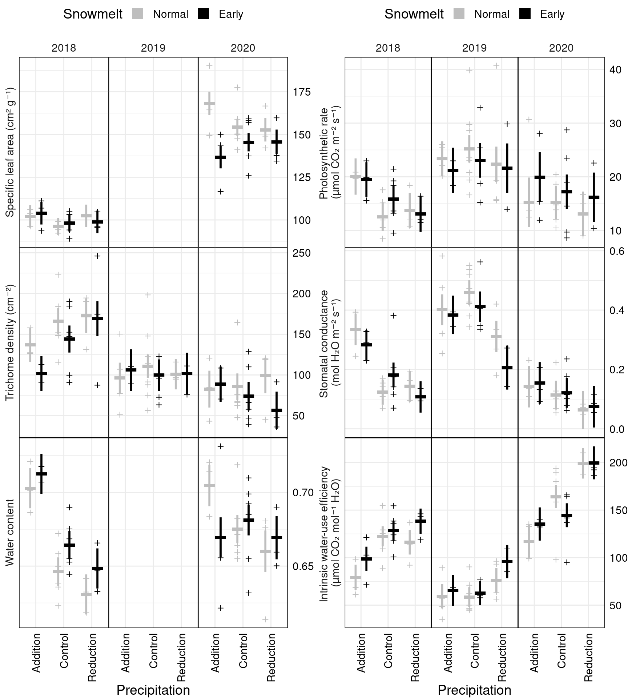
plot_split_plot(mod.split.emm, pt.subplot, phystraits)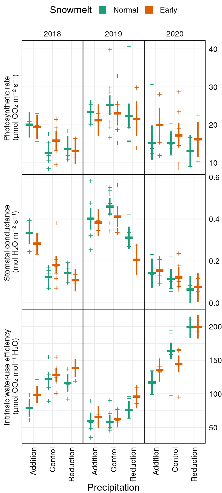
Compensation of water addition for early snowmelt
#compare early snowmelt + addition vs. normal snowmelt + control
emm.mod <- mt.mod.glht <- list()
mnps.plantyr$snowwater <- paste0(mnps.plantyr$snow, mnps.subplot$water)
library(multcomp)#careful, this loads MASS, which overrides dplyr::select
for(tr in traits) {
#emm.mod[[tr]] <- emmeans(mt.mod[[tr]], ~ water * snow, var=tr)
mt.mod.glht[[tr]] <- lmer(mnps.plantyr[[tr]] ~ snowwater * year+ (1|snow:plot) + (1|snow:plotid), data=mnps.plantyr) %>%
glht(linfct = mcp(snowwater = c("EarlyAddition - NormalControl = 0")))
}
map_dfr(mt.mod.glht, ~ tibble(EarlyAddition_minus_NormalControl = coef(.x), p=summary(.x)$test$pvalues), .id="trait") %>% kable(digits=3)| trait | EarlyAddition_minus_NormalControl | p |
|---|---|---|
| corolla_length | -0.034 | 0.952 |
| style_length | -0.217 | 0.648 |
| corolla_width | -0.083 | 0.221 |
| sepal_width | -0.058 | 0.289 |
| nectar_24_h_ul | -0.373 | 0.057 |
| nectar_conc | 0.650 | 0.654 |
| nectar_sugar_24_h_mg | -0.082 | 0.100 |
| height_cm | -1.552 | 0.290 |
| open | 0.737 | 0.135 |
| seeds_per_fruit | 1.168 | 0.028 |
| seeds_est | 48.053 | 0.003 |
| fruits_nonaborted | 5.008 | 0.266 |
| flowers_est | 8.548 | 0.122 |
| prop_infested | 0.028 | 0.390 |
| prop_aborted | -0.004 | 0.939 |
| seeds_per_flower | 0.132 | 0.607 |
detach("package:multcomp", unload = TRUE); detach("package:TH.data", unload = TRUE); detach("package:MASS", unload = TRUE)Compare treatment levels
#This ignores any interactions with water (water:snow and water:year)
mod.split.tests.water <- map(mod.split, multcomp::glht,
linfct = multcomp::mcp(water = c("Addition - Control = 0", "Reduction - Control = 0"))) %>%
map_dfr(tidy, .id="trait")
mod.split.tests.water %>% select(trait, contrast, adj.p.value) %>% pivot_wider(names_from=contrast, values_from=adj.p.value) %>% kable(digits=3)| trait | Addition - Control | Reduction - Control |
|---|---|---|
| corolla_length | 0.030 | 0.011 |
| style_length | 0.253 | 0.039 |
| corolla_width | 0.000 | 0.254 |
| sepal_width | 0.170 | 0.022 |
| nectar_24_h_ul | 0.022 | 0.846 |
| nectar_conc | 0.001 | 0.998 |
| nectar_sugar_24_h_mg | 0.515 | 0.804 |
| height_cm | 1.000 | 0.985 |
| open | 0.808 | 0.885 |
| seeds_per_fruit | 0.841 | 0.976 |
| seeds_est | 0.654 | 0.619 |
| fruits_nonaborted | 0.998 | 0.293 |
| flowers_est | 0.886 | 0.409 |
| prop_infested | 0.292 | 0.567 |
| prop_aborted | 0.831 | 0.628 |
| seeds_per_flower | 0.540 | 0.995 |
| sla | 0.883 | 0.628 |
| trichome_density | 0.560 | 0.948 |
| water_content | 0.223 | 0.981 |
| photosynthesis | 0.520 | 0.598 |
| conductance | 0.137 | 0.004 |
| WUE | 0.005 | 0.001 |
map_dfr(mod.split, ~ summary(emmeans(ref_grid(.x), ~ snow)), .id = "trait") trait snow emmean SE df lower.CL upper.CL
corolla_length Early 24.743 0.3428 4.57 23.837 25.650
corolla_length Normal 24.679 0.3118 5.15 23.884 25.473
style_length Early 24.371 0.2909 4.47 23.596 25.146
style_length Normal 24.497 0.2684 5.11 23.811 25.182
corolla_width Early 3.280 0.0288 4.34 3.203 3.358
corolla_width Normal 3.296 0.0276 4.80 3.224 3.368
sepal_width Early 1.490 0.0291 4.87 1.414 1.565
sepal_width Normal 1.486 0.0248 4.69 1.421 1.551
nectar_24_h_ul Early 1.660 0.0963 4.52 1.405 1.916
nectar_24_h_ul Normal 1.850 0.0884 5.13 1.625 2.076
nectar_conc Early 28.160 0.9700 4.88 25.648 30.672
nectar_conc Normal 27.271 0.8577 5.22 25.093 29.448
nectar_sugar_24_h_mg Early 0.556 0.0240 4.19 0.490 0.621
nectar_sugar_24_h_mg Normal 0.590 0.0226 4.94 0.532 0.648
height_cm Early 33.809 0.9235 4.67 31.385 36.233
height_cm Normal 36.571 0.8685 5.76 34.425 38.718
open Early 4.151 0.2983 4.59 3.363 4.939
open Normal 4.057 0.2798 5.36 3.352 4.762
seeds_per_fruit Early 6.717 0.2531 4.63 6.051 7.384
seeds_per_fruit Normal 6.433 0.2242 4.38 5.831 7.035
seeds_est Early 114.545 8.8673 4.85 91.531 137.559
seeds_est Normal 118.796 7.8606 4.83 98.377 139.215
fruits_nonaborted Early 25.948 2.7531 5.28 18.984 32.913
fruits_nonaborted Normal 26.674 2.4438 5.46 20.547 32.801
flowers_est Early 45.508 3.1269 5.13 37.530 53.485
flowers_est Normal 44.416 2.7851 5.23 37.352 51.480
prop_infested Early 0.229 0.0216 4.86 0.173 0.285
prop_infested Normal 0.188 0.0192 4.87 0.138 0.238
prop_aborted Early 0.422 0.0352 4.79 0.330 0.513
prop_aborted Normal 0.387 0.0312 4.91 0.307 0.468
seeds_per_flower Early 2.268 0.1270 4.63 1.934 2.603
seeds_per_flower Normal 2.508 0.1125 4.38 2.206 2.810
sla Early 132.864 9.4653 4.96 108.468 157.260
sla Normal 126.272 8.3037 5.14 105.102 147.442
trichome_density Early 104.670 12.1009 5.10 73.745 135.595
trichome_density Normal 116.849 10.7970 5.40 89.706 143.993
water_content Early 0.693 0.0228 5.01 0.634 0.752
water_content Normal 0.652 0.0200 5.17 0.601 0.703
photosynthesis Early 18.643 1.5149 12.57 15.359 21.927
photosynthesis Normal 17.878 1.4084 11.77 14.802 20.953
conductance Early 0.214 0.0253 14.20 0.160 0.268
conductance Normal 0.232 0.0237 13.38 0.181 0.283
WUE Early 118.801 6.3666 13.93 105.140 132.462
WUE Normal 110.198 5.9840 13.60 97.328 123.067
Results are averaged over the levels of: year, water
Degrees-of-freedom method: kenward-roger
Confidence level used: 0.95 Plasticity: absolute snowmelt date and estimated summer precipitation
ANOVA tables
lt.subplot.r2 <- lt.subplotround %>% filter(round=="2")
lt.plantyr.r2 <- lt.plantyr %>% filter(round=="2")
options(contrasts = c("contr.sum", "contr.poly"))
mod.abs <- c(map(set_names(traits),
~ lmer(mnps.plantyr[[.x]] ~ sun_date * precip_est_mm + (1|plot) + (1|plotid), data=mnps.plantyr)),
map(set_names(leaftraits),
~ lmer(lt.plantyr.r2[[.x]] ~ sun_date * precip_est_mm + (1|plot) + (1|plotid), data=lt.plantyr.r2)),
map(set_names(phystraits),
~ lmer(pt.plantyr[[.x]] ~ sun_date * precip_est_mm + (1|plot) + (1|plotid) + (1|round),
data=pt.plantyr)))
mod.abs.coefs <- map_dfr(mod.abs, tidy, .id="trait")
mod.abs.tests <- map(mod.abs, anova, ddf="Ken") %>% map_dfr(tidy, .id="trait")
anova_table(mod.abs.tests, mod.abs) %>% kable()| trait | sun_date | precip_est_mm | sun_date:precip_est_mm | singular | R2m |
|---|---|---|---|---|---|
| corolla_length | 2.8 x 10-7 | 1.1 x 10-3 | 0.022 | FALSE | 0.1712245 |
| style_length | 4.5 x 10-8 | 0.087 | 0.24 | FALSE | 0.1607592 |
| corolla_width | 7.6 x 10-8 | 0.024 | 0.17 | FALSE | 0.2036019 |
| sepal_width | 0.039 | 7.7 x 10-4 | 2.4 x 10-3 | FALSE | 0.0675314 |
| nectar_24_h_ul | 4.6 x 10-3 | 0.37 | 0.93 | FALSE | 0.1237175 |
| nectar_conc | 1.2 x 10-12 | 0.069 | 0.25 | FALSE | 0.2885247 |
| nectar_sugar_24_h_mg | 0.53 | 0.52 | 0.79 | TRUE | 0.0347675 |
| height_cm | 1.4 x 10-13 | 0.56 | 0.49 | TRUE | 0.2246200 |
| open | 4.5 x 10-25 | 0.11 | 0.10 | FALSE | 0.3120189 |
| seeds_per_fruit | 7.2 x 10-3 | 0.91 | 0.92 | TRUE | 0.0571771 |
| seeds_est | 9.3 x 10-4 | 0.75 | 0.73 | TRUE | 0.0666105 |
| fruits_nonaborted | 0.017 | 0.64 | 0.79 | TRUE | 0.0299600 |
| flowers_est | 0.43 | 0.44 | 0.52 | TRUE | 0.0027794 |
| prop_infested | 0.077 | 0.76 | 0.86 | TRUE | 0.0179036 |
| prop_aborted | 2.6 x 10-3 | 0.46 | 0.57 | FALSE | 0.0400711 |
| seeds_per_flower | 3.9 x 10-4 | 0.72 | 0.72 | TRUE | 0.0765589 |
| sla | 2.2 x 10-5 | 0.055 | 0.11 | FALSE | 0.1247363 |
| trichome_density | 1.4 x 10-3 | 0.025 | 0.12 | FALSE | 0.1214186 |
| water_content | 3.5 x 10-3 | 1.5 x 10-3 | 3.5 x 10-3 | TRUE | 0.0478869 |
| photosynthesis | 2.9 x 10-3 | 0.072 | 0.12 | TRUE | 0.0819421 |
| conductance | 5.9 x 10-5 | 9.9 x 10-3 | 0.038 | TRUE | 0.2358140 |
| WUE | 9.4 x 10-4 | 9.4 x 10-3 | 0.053 | TRUE | 0.2140141 |
re_table(mod.abs.coefs) %>% kable(digits=3)| trait | plotid | plot | Residual | round |
|---|---|---|---|---|
| corolla_length | 0.567 | 0.318 | 2.669 | NA |
| style_length | 0.392 | 0.234 | 2.653 | NA |
| corolla_width | 0.048 | 0.031 | 0.400 | NA |
| sepal_width | 0.024 | 0.027 | 0.226 | NA |
| nectar_24_h_ul | 0.237 | 0.055 | 1.035 | NA |
| nectar_conc | 0.844 | 1.039 | 4.988 | NA |
| nectar_sugar_24_h_mg | 0.025 | 0.000 | 0.304 | NA |
| height_cm | 1.681 | 0.000 | 8.968 | NA |
| open | 0.456 | 0.562 | 3.237 | NA |
| seeds_per_fruit | 0.000 | 0.000 | 3.366 | NA |
| seeds_est | 15.954 | 0.000 | 105.214 | NA |
| fruits_nonaborted | 6.346 | 0.000 | 25.099 | NA |
| flowers_est | 6.729 | 0.000 | 32.363 | NA |
| prop_infested | 0.000 | 0.019 | 0.225 | NA |
| prop_aborted | 0.017 | 0.047 | 0.274 | NA |
| seeds_per_flower | 0.000 | 0.000 | 1.683 | NA |
| sla | 2.443 | 3.586 | 35.675 | NA |
| trichome_density | 19.972 | 12.994 | 61.510 | NA |
| water_content | 0.000 | 0.013 | 0.068 | NA |
| photosynthesis | 0.000 | 0.000 | 11.638 | 3.852 |
| conductance | 0.030 | 0.000 | 0.171 | 0.091 |
| WUE | 7.521 | 0.000 | 42.024 | 32.671 |
Plots
plot_abs <- function(mod, data, traits.plot) {
data.long <- data %>% select(all_of(traits.plot), water, snow, year, sun_date, precip_est_mm) %>%
pivot_longer(all_of(traits.plot), names_to="trait") %>%
mutate(trait = fct_relevel(trait, traits.plot), snow=fct_relevel(snow, "Normal"),
value = (value - alltraits.mean[as.character(trait)])/alltraits.sd[as.character(trait)]) %>%
drop_na(value, water) %>% filter(trait %in% traits.plot)
emm.grid <- mod[traits.plot] %>%
map_dfr(~ emmeans(.x, ~ precip_est_mm * sun_date,
at=list(sun_date=range(treatments$sun_date), precip_est_mm=seq(25,150, by=25)))
%>% as_tibble(), .id="trait") %>%
mutate(trait = fct_relevel(trait, traits.plot),
emmean = (emmean - alltraits.mean[as.character(trait)])/alltraits.sd[as.character(trait)])
traitnames.multiline <- ifelse(nchar(traitnames) > 30, str_replace(traitnames, fixed("("),"\n("), traitnames)
abs_plot <- ggplot(emm.grid, aes(x=sun_date, y=emmean, color=precip_est_mm, group=precip_est_mm)) +
facet_wrap(vars(trait), scales="fixed",labeller = as_labeller(traitnames.multiline))+
geom_point(data = data.long, aes(y=value, shape=year), size=2) + geom_line() +
scale_color_gradientn(colors=rev(water_pal),
values=rev(c(1, (treatments %>% group_by(water) %>% summarize(across(precip_est_mm, mean)) %>%
pull(precip_est_mm) %>% scales::rescale(from=c(25,150)))[2],0)),
breaks=seq(25,150, by=25)) +
labs(x="Snowmelt date", y="Standardized trait", color="Summer\nprecipitation\n(mm)", shape="Year") +
#coord_cartesian(ylim=c(0,NA)) + scale_y_continuous(expand=expansion(mult=c(0,0.05)))+
theme_minimal() + theme(text=element_text(color="black", size=14), axis.text = element_text(color="black"),
panel.border = element_rect(fill=NA, colour = "black"))
return(abs_plot)
}
# plot_abs(mt.mod.abs, mnps, floraltraits) #Morphological traits - raw data
plot_abs(mod.abs, mnps.subplot, floraltraits) + #Morphological traits - subplot means
scale_y_continuous(limits=c(-1.7, 2.8), breaks=c(-1:2))
# grid.arrange(plot_abs(lt.mod.abs, lt, leaftraits),
# plot_abs(pt.mod.abs, pt, phystraits) + guides(color=F, shape=F), ncol=1) #raw data
grid.arrange(plot_abs(mod.abs, lt.subplot.r2, leaftraits)+
scale_y_continuous(limits=c(-2.6, 1.8), breaks=c(-2:1)),
plot_abs(mod.abs, pt.subplot, phystraits)+ guides(color=F, shape=F) +
scale_y_continuous(limits=c(-2.6, 1.8), breaks=c(-2:1)), ncol=1) #subplot means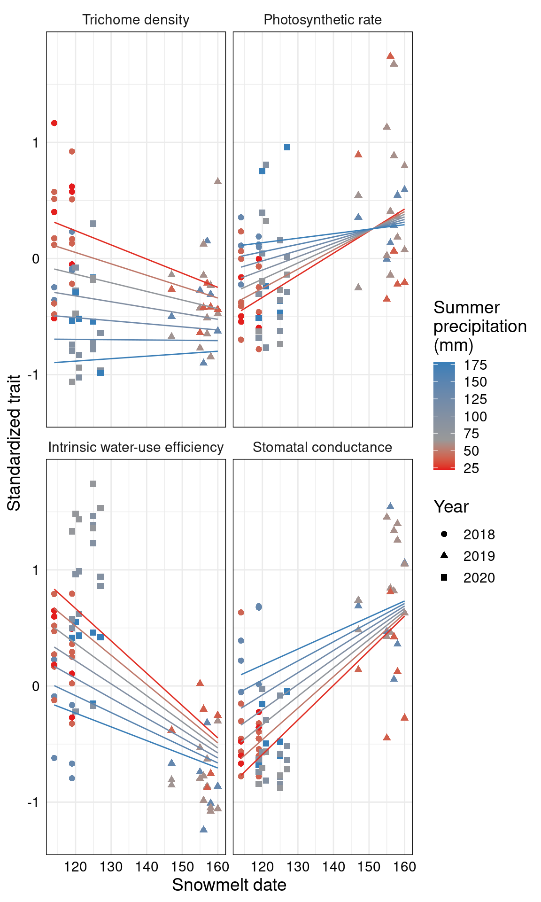
Slope plots and compensation
# for corolla width there are effects of both predictors but no interaction
mod.abs.emm.corolla_width <- bind_rows(
sun_date = emtrends(mod.abs$corolla_width, var="sun_date", ~1) %>% as_tibble %>%
transmute(trend = sun_date.trend / alltraits.sd["corolla_width"], SE = SE / alltraits.sd["corolla_width"]),
precip_est_mm = emtrends(mod.abs$corolla_width, var="precip_est_mm", ~1) %>% as_tibble %>%
transmute(trend = precip_est_mm.trend / alltraits.sd["corolla_width"], SE = SE / alltraits.sd["corolla_width"]),
.id="predictor")
mod.abs.emm.corolla_width$trend[1] / mod.abs.emm.corolla_width$trend[2] #compensation point in mm precip / daycorolla_width
2.902782 mean(groundcover$precip_est_mm, na.rm=T) # mean summer precip 1990 - 2020 (mm)[1] 81.13283predictor.ranges <- list(sun_date=c(115,160) , precip_est_mm=c(25, 150)) #a bit narrower than the experiment
#get slopes with emtrends at range of other predictor, and scale slopes by SD of the plant means
mod.abs.emm <- map_dfr(set_names(c("sun_date", "precip_est_mm")),
~ mod.abs %>%
map(emtrends, var = .x,
at = predictor.ranges) %>% #[ifelse(.x=="sun_date","precip_est_mm","sun_date")]
map(as_tibble) %>% set_names(alltraits) %>% bind_rows(.id="trait") %>%
rename_with(.cols=ends_with("trend"), ~ "trend"), .id="predictor") %>%
mutate(predictor=fct_relevel(predictor,"sun_date"),
sd.plantyr = alltraits.sd[trait],
trend = trend / sd.plantyr, SE = SE / sd.plantyr)
mod.abs.emm.plot.sun_date <-
mod.abs.emm %>% filter(predictor=="sun_date", sun_date == predictor.ranges$sun_date[1]) %>%
ggplot(aes(x=fct_relevel(trait, rev(alltraits)), y=trend, color=factor(precip_est_mm))) +
facet_wrap(vars(predictor), nrow=1, scales="free_x",
labeller=labeller(predictor=c(sun_date="Snowmelt date"))) +
geom_hline(yintercept=0) +
geom_pointrange(aes(ymin=trend - SE, ymax = trend + SE), size=0.4, position=position_dodge2(0.2)) +
labs(y="Slope of standardized trait vs. predictor", x="Trait", color="Estimated summer precip (mm)") +
scale_color_manual(values= unname(water_pal[c(3,1)])) +
scale_x_discrete(labels = traitnames) + coord_flip() + theme_bw() + theme(legend.position = "top")
mod.abs.emm.plot.precip_est_mm <-
mod.abs.emm %>% filter(predictor=="precip_est_mm", precip_est_mm == predictor.ranges$precip_est_mm[1]) %>%
ggplot(aes(x=fct_relevel(trait, rev(alltraits)), y=trend, color=factor(sun_date))) +
facet_wrap(vars(predictor), nrow=1, scales="free_x",
labeller=labeller(predictor=c(precip_est_mm="Estimated summer precip (mm)"))) +
geom_hline(yintercept=0) +
geom_pointrange(aes(ymin=trend - SE, ymax = trend + SE), size=0.4, position=position_dodge2(0.2)) +
labs(y="Slope of standardized trait vs. predictor", x="", color="Snowmelt date") +
scale_color_manual(values= unname(snow_pal)) +
scale_x_discrete(labels = traitnames) + coord_flip() + theme_bw() +
theme(legend.position = "top",axis.text.y = element_blank(), axis.ticks.y = element_blank())
#calculate how much summer precip is required to compensate for 1 day earlier snowmelt
#mt.exclude.compensate <- mt.mod.abs.tests %>% filter(term %in% c("precip_est_mm", "sun_date"), p.value > 0.05) %>% pull(trait) %>% unique #if P> 0.05 for effect of summer precip or snowmelt
exclude.compensate<- c("height_cm", #snowmelt/precip slope too big and P > 0.05 for both
"sepal_width",#sepal_width has interaction with sun_date,
"seeds_per_flower", "seeds_per_fruit", "seeds_est", "open")
mod.abs.emm.compensate <- mod.abs.emm %>%
pivot_wider(names_from=predictor, values_from=c(trend, SE), id_cols=c(trait, sun_date, precip_est_mm)) %>%
mutate(predictor = "Compensation",
precip_mm_per_snow_day = trend_sun_date / trend_precip_est_mm,
SE = abs(precip_mm_per_snow_day) * # propagate error in SEs using formula for quotients
sqrt((SE_precip_est_mm / trend_precip_est_mm)^2 + (SE_sun_date / trend_sun_date)^2),
exclude = trait %in% exclude.compensate,
precip_mm_per_snow_day = ifelse(exclude, NA, precip_mm_per_snow_day), SE = ifelse(exclude, NA, SE))
mod.abs.emm.compensate.plot <- mod.abs.emm.compensate %>%
ggplot(aes(x=fct_relevel(trait, rev(alltraits)), y=precip_mm_per_snow_day,
color=paste0(sun_date, ", ", precip_est_mm))) +
facet_wrap(vars(predictor)) + geom_hline(yintercept=0) +
geom_pointrange(aes(ymin=precip_mm_per_snow_day - SE, ymax = precip_mm_per_snow_day + SE), size=0.4,
position=position_dodge2(0.4)) +
labs(y="Summer precipitation (mm) / day earlier snowmelt", x="", color="Snowmelt, Precip") +
scale_x_discrete(labels = traitnames) + coord_flip(ylim = c(-5,17)) +
theme_bw() + theme(axis.text.y = element_blank(), axis.ticks.y = element_blank(), legend.position="top")
grid.arrange(mod.abs.emm.plot.sun_date, mod.abs.emm.plot.precip_est_mm, mod.abs.emm.compensate.plot, nrow=1, widths=c(1,0.5,0.8))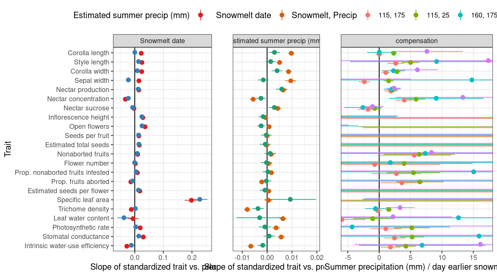
Leaf traits repeated measures
lt %>% group_by(plantid, year.round) %>% tally() %>% ungroup %>%
pivot_wider(names_from=year.round, values_from=n, values_fill=0) %>%
rowwise() %>% mutate(tot = sum(c_across(!plantid))) %>%
ggplot(aes(tot)) + geom_histogram(binwidth=1, color="black", fill="white") +
labs(x="Total samples", y="Number of plants", title="Leat trait sampling") + theme_minimal()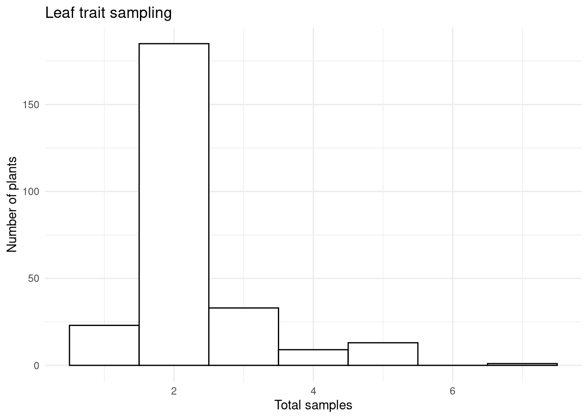
with(lt, table(plantid, year.round)) %>% heatmap(scale="none", Colv = NA, col=c("white",status_pal["vegetative"],"yellow"))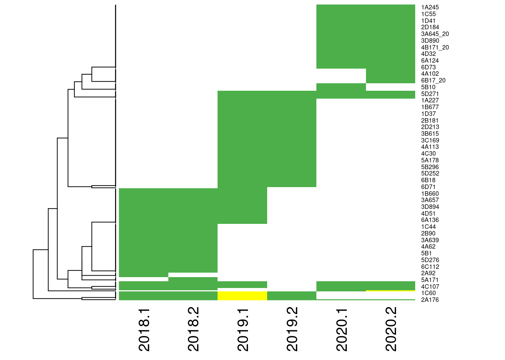
lt.mod.split.rm <- map(set_names(leaftraits),
~ lmer(lt[[.x]] ~ year.round * snow * water + (1|snow:plot) + (1|snow:plotid) + (1|plantid), data=lt))
lt.mod.split.rm.coefs <- map_dfr(lt.mod.split.rm, tidy, .id="trait")
lt.mod.split.rm.tests <- map(lt.mod.split.rm, anova, ddf="Ken") %>% map_dfr(tidy, .id="trait")
anova_table(lt.mod.split.rm.tests, lt.mod.split.rm) %>% kable()| trait | year.round | snow | water | year.round:snow | year.round:water | snow:water | year.round:snow:water | singular | R2m |
|---|---|---|---|---|---|---|---|---|---|
| sla | 1.9 x 10-42 | 0.99 | 0.46 | 0.034 | 0.068 | 0.48 | 0.96 | TRUE | 0.3677918 |
| trichome_density | 7.9 x 10-25 | 0.30 | 0.94 | 0.86 | 0.073 | 0.88 | 0.64 | FALSE | 0.2620668 |
| water_content | 1.1 x 10-62 | 0.51 | 0.058 | 7.3 x 10-7 | 3.3 x 10-7 | 0.57 | 0.28 | FALSE | 0.5034187 |
lt.mod.abs.rm <- map(set_names(leaftraits),
~ lmer(lt[[.x]] ~ sun_date * precip_est_mm * round + (1|plot) + (1|plotid) + (1|plantid), data=lt))
lt.mod.abs.rm.coefs <- map_dfr(lt.mod.abs.rm, tidy, .id="trait")
lt.mod.abs.rm.tests <- map(lt.mod.abs.rm, anova, ddf="Ken") %>% map_dfr(tidy, .id="trait")
anova_table(lt.mod.abs.rm.tests, lt.mod.abs.rm) %>% kable()| trait | sun_date | precip_est_mm | round | sun_date:precip_est_mm | sun_date:round | precip_est_mm:round | sun_date:precip_est_mm:round | singular | R2m |
|---|---|---|---|---|---|---|---|---|---|
| sla | 6.5 x 10-9 | 0.015 | 0.024 | 0.025 | 0.22 | 0.49 | 0.74 | TRUE | 0.2335215 |
| trichome_density | 0.24 | 0.062 | 2.3 x 10-6 | 0.076 | 1.5 x 10-6 | 0.54 | 0.70 | TRUE | 0.2112920 |
| water_content | 1.6 x 10-9 | 0.046 | 0.34 | 0.049 | 0.051 | 7.1 x 10-3 | 0.017 | TRUE | 0.3306693 |
Lagged effects of snowmelt
mnps.plantyr <- mnps.plantyr %>% left_join(meltdates %>% select(year, plot, sun_date_lag=sun_date) %>%
bind_rows(groundcover %>% select(year, sun_date_lag=first_0_cm_day) %>% filter(year == 2017) %>%
mutate(year=as.factor(year)) %>% left_join(tibble(year="2017", plot=as.character(1:6))))%>%
mutate(year = as.character(as.integer(as.character(year)) + 1)))
mod.abs.lag <- c(map(set_names(traits),
~ lmer(mnps.plantyr[[.x]] ~ sun_date_lag * precip_est_mm + (1|plot) + (1|plotid), data=mnps.plantyr)))
mod.abs.lag.tests <- map(mod.abs.lag, anova, ddf="Ken") %>% map_dfr(tidy, .id="trait")
anova_table(mod.abs.lag.tests, mod.abs.lag) %>% kable()| trait | sun_date_lag | precip_est_mm | sun_date_lag:precip_est_mm | singular | R2m |
|---|---|---|---|---|---|
| corolla_length | 1.3 x 10-4 | 0.046 | 3.9 x 10-3 | FALSE | 0.1203098 |
| style_length | 5.1 x 10-6 | 0.32 | 0.11 | FALSE | 0.1151090 |
| corolla_width | 2.4 x 10-7 | 9.9 x 10-3 | 6.9 x 10-4 | FALSE | 0.1407910 |
| sepal_width | 0.033 | 9.2 x 10-3 | 2.1 x 10-3 | FALSE | 0.0675652 |
| nectar_24_h_ul | 0.026 | 0.98 | 0.46 | FALSE | 0.0871372 |
| nectar_conc | 5.5 x 10-11 | 0.34 | 0.078 | FALSE | 0.2396914 |
| nectar_sugar_24_h_mg | 0.12 | 0.82 | 0.97 | TRUE | 0.0524814 |
| height_cm | 4.7 x 10-12 | 0.36 | 0.25 | FALSE | 0.1900497 |
| open | 1.3 x 10-20 | 0.041 | 0.013 | TRUE | 0.2486115 |
| seeds_per_fruit | 9.7 x 10-3 | 0.77 | 0.74 | TRUE | 0.0462948 |
| seeds_est | 1.2 x 10-3 | 0.58 | 0.52 | TRUE | 0.0617204 |
| fruits_nonaborted | 0.022 | 0.64 | 0.46 | TRUE | 0.0238947 |
| flowers_est | 0.41 | 0.79 | 0.67 | TRUE | 0.0042767 |
| prop_infested | 0.44 | 1.00 | 0.91 | TRUE | 0.0044811 |
| prop_aborted | 2 x 10-2 | 0.34 | 0.25 | FALSE | 0.0164323 |
| seeds_per_flower | 5 x 10-4 | 0.25 | 0.22 | FALSE | 0.0534390 |
ggplot(mnps.plantyr %>% distinct(year, sun_date, sun_date_lag), aes(x=sun_date, y=sun_date_lag, color=year)) + geom_point()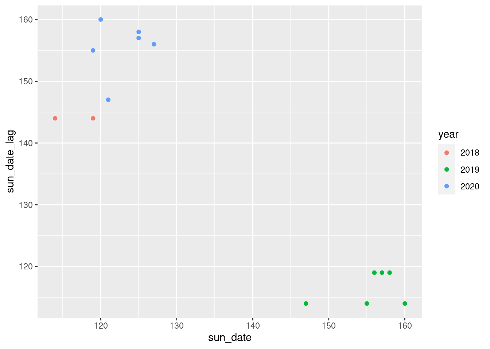
ggplot(mnps.plantyr, aes(x=sun_date_lag, y=flowers_est, color=year)) + geom_point() + geom_smooth(method="lm") + scale_color_manual(values=year_pal) + theme_minimal() + labs(x="Melt date the previous year", y=traitnames["flowers_est"], color="Year")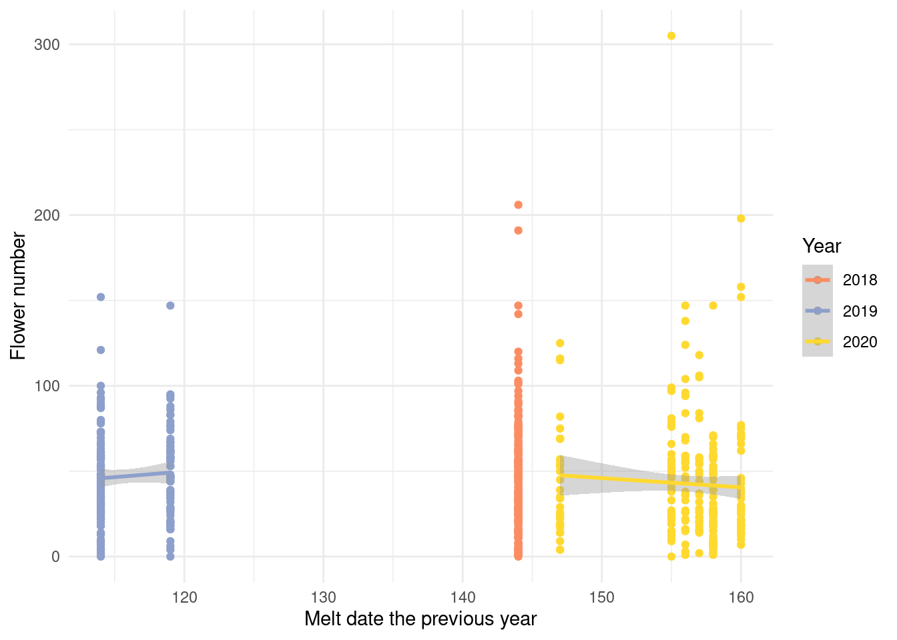
Plasticity: soil moisture
Both snowmelt timing and summer precipitation affect soil moisture and its timing. This analysis regresses the floral traits against the mean soil moisture in a subplot. Slopes may differ among years. The models use:
- mt.plantyr, the trait data averaged by plant within year
- VWC, the summer mean of the approximately weekly mean volumetric water content in a subplot. This may need to change to a subset of the summer because it includes soil moisture taken after traits were measured. See section on within-season variation for timing of measurements in each year.
- plotid (subplot) as a random effect (plants vary within this larger unit)
The models are specified as:
lmer(trait ~ year * VWC + (1|plotid), data = mt.plantyr)ANOVAs
lt.subplot.r2 <- lt.subplotround %>% filter(round=="2")
lt.plantyr.r2 <- lt.plantyr %>% filter(round=="2")
pt.plantyr <- pt.plantyr %>% mutate(VWC = ifelse(is.na(VWC.plant), VWC.sm, VWC.plant)) #phys traits had the VWC measured next to the plant in 2019 and 2020 only - substitute VWC in subplot on closest date
pt <- pt %>% mutate(VWC = ifelse(is.na(VWC.plant), VWC.sm, VWC.plant))
options(contrasts = c("contr.sum", "contr.poly"))
mod.sm <- c(map(set_names(traits),
~ lmer(mnps.plantyr[[.x]] ~ year * VWC + (1|plotid), data=mnps.plantyr)),
map(set_names(leaftraits),
~ lmer(lt.plantyr.r2[[.x]] ~ year * VWC + (1|plotid), data=lt.plantyr.r2)),
map(set_names(phystraits),
~ lmer(pt.plantyr[[.x]] ~ year * VWC + I(VWC^2) + (1|plotid) + (1|round), data=pt.plantyr)))
#significant effect of quadratic term for sepal_width, photosynthesis, conductance, but not year * VWC^2
mod.sm.coefs <- map_dfr(mod.sm, tidy, .id="trait")
mod.sm.tests <- map(mod.sm, anova, ddf="Ken") %>% map_dfr(tidy, .id="trait")
anova_table(mod.sm.tests, mod.sm) %>% kable()| trait | year | VWC | year:VWC | I(VWC^2) | singular | R2m |
|---|---|---|---|---|---|---|
| corolla_length | 6.6 x 10-3 | 0.013 | 0.45 | NA | FALSE | 0.2068999 |
| style_length | 0.19 | 2.1 x 10-3 | 0.81 | NA | FALSE | 0.1767118 |
| corolla_width | 4.3 x 10-3 | 1.9 x 10-4 | 0.046 | NA | TRUE | 0.2872278 |
| sepal_width | 7.7 x 10-3 | 1 x 10-2 | 3.4 x 10-3 | NA | FALSE | 0.0749237 |
| nectar_24_h_ul | 0.26 | 5.5 x 10-5 | 0.11 | NA | FALSE | 0.1591228 |
| nectar_conc | 2 x 10-4 | 0.011 | 0.32 | NA | FALSE | 0.2835345 |
| nectar_sugar_24_h_mg | 3.8 x 10-3 | 5.9 x 10-3 | 0.028 | NA | TRUE | 0.1004421 |
| height_cm | 0.51 | 0.081 | 0.18 | NA | FALSE | 0.2177241 |
| open | 7.1 x 10-4 | 0.66 | 0.93 | NA | FALSE | 0.2474151 |
| seeds_per_fruit | 0.72 | 0.98 | 0.80 | NA | TRUE | 0.0619134 |
| seeds_est | 0.82 | 0.25 | 0.25 | NA | FALSE | 0.0776607 |
| fruits_nonaborted | 0.81 | 0.15 | 0.30 | NA | FALSE | 0.0368612 |
| flowers_est | 0.73 | 8 x 10-2 | 0.75 | NA | FALSE | 0.0105290 |
| prop_infested | 0.35 | 0.96 | 0.93 | NA | TRUE | 0.0380341 |
| prop_aborted | 0.40 | 0.69 | 0.81 | NA | FALSE | 0.0500304 |
| seeds_per_flower | 0.82 | 0.64 | 0.69 | NA | TRUE | 0.0755739 |
| sla | 1.1 x 10-6 | 0.15 | 2.2 x 10-3 | NA | FALSE | 0.3758635 |
| trichome_density | 1.3 x 10-4 | 0.89 | 0.032 | NA | FALSE | 0.1972221 |
| water_content | 4.9 x 10-9 | 0.56 | 1.1 x 10-8 | NA | FALSE | 0.1355240 |
| photosynthesis | 0.45 | 2.5 x 10-4 | 0.67 | 5.5 x 10-3 | FALSE | 0.1497225 |
| conductance | 8.8 x 10-4 | 6.6 x 10-5 | 0.022 | 0.039 | FALSE | 0.3857533 |
| WUE | 2.6 x 10-8 | 0.051 | 7.5 x 10-3 | 0.94 | FALSE | 0.4336830 |
re_table(mod.sm.coefs) %>% kable(digits=3)| trait | plotid | Residual | round |
|---|---|---|---|
| corolla_length | 0.493 | 2.583 | NA |
| style_length | 0.373 | 2.638 | NA |
| corolla_width | 0.000 | 0.381 | NA |
| sepal_width | 0.021 | 0.227 | NA |
| nectar_24_h_ul | 0.124 | 1.022 | NA |
| nectar_conc | 1.441 | 4.980 | NA |
| nectar_sugar_24_h_mg | 0.000 | 0.295 | NA |
| height_cm | 1.833 | 8.998 | NA |
| open | 0.501 | 3.424 | NA |
| seeds_per_fruit | 0.000 | 3.364 | NA |
| seeds_est | 14.317 | 104.995 | NA |
| fruits_nonaborted | 6.159 | 25.078 | NA |
| flowers_est | 6.642 | 32.349 | NA |
| prop_infested | 0.000 | 0.224 | NA |
| prop_aborted | 0.041 | 0.274 | NA |
| seeds_per_flower | 0.000 | 1.687 | NA |
| sla | 6.440 | 29.759 | NA |
| trichome_density | 21.952 | 57.335 | NA |
| water_content | 0.007 | 0.066 | NA |
| photosynthesis | 0.142 | 11.479 | 3.063 |
| conductance | 0.021 | 0.166 | 0.060 |
| WUE | 8.846 | 41.622 | 14.583 |
Plots
mod.sm.emm <- map_dfr(mod.sm, ~ summary(emtrends(.x, ~ year, var = "VWC")), .id="trait") %>%
mutate(trait.SD = alltraits.sd[trait], VWC.trend.SD = VWC.trend/trait.SD, SE.SD = SE/trait.SD, .after="VWC.trend")
#mod.sm.emm.allyears <- map_dfr(mod.sm, ~ summary(emtrends(.x, ~ 1 , var = "VWC")), .id="trait") %>%
# mutate(trait.SD = alltraits.sd[trait], VWC.trend.SD = VWC.trend/trait.SD, SE.SD = SE/trait.SD, .after="VWC.trend")
#library(googlesheets4)
#bind_rows(mod.sm.emm, mod.sm.emm.allyears %>% rename(year=`1`)) %>%
# mutate(predictor="VWC", .before=1) %>% mutate(traitname=traitnames[trait], .before="trait") %>%
# write_sheet(ss=filter(datasheets, name=="Maxfield Results"), sheet="slopes_VWC")
# left_join(mod.sm.emm, mnps.subplot %>% group_by(year) %>% select(traits) %>%
# summarize(across(traits, ~ sum(!is.na(.x)))) %>%
# pivot_longer(traits, names_to="trait", values_to="n"))
mod.sm.emm %>% #filter(trait %in% floraltraits) %>%
ggplot(aes(x=fct_relevel(trait, rev(alltraits)), y=VWC.trend.SD, color=year)) +
geom_hline(yintercept=0) + geom_pointrange(aes(ymin=VWC.trend.SD - SE.SD, ymax = VWC.trend.SD + SE.SD), position=position_dodge(width=0.3), size=0.4) +
labs(y="Slope of standardized trait vs. mean annual soil moisture", x="Trait", color="Year") +
theme_classic() + scale_x_discrete(labels = traitnames) + coord_flip() + scale_color_manual(values=year_pal)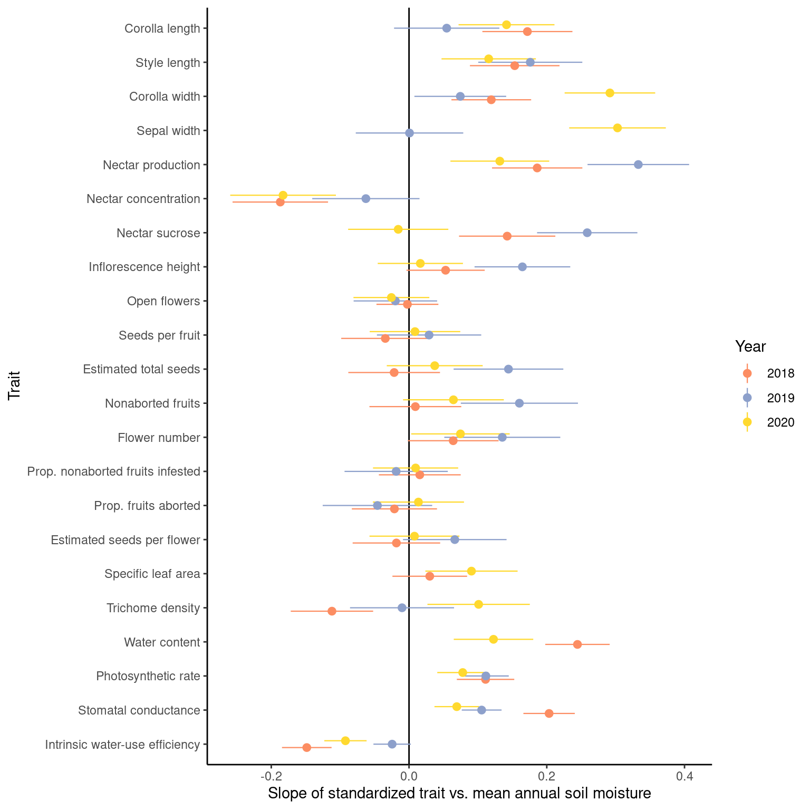
plot_sm <- function(mod, data, traits.plot) {
data.long <- data %>% select(all_of(traits.plot), water, snow, year, sun_date, precip_est_mm, VWC) %>%
pivot_longer(all_of(traits.plot), names_to="trait") %>%
mutate(trait = fct_relevel(trait, traits.plot), snow=fct_relevel(snow, "Normal"),
value = (value - alltraits.mean[as.character(trait)])/alltraits.sd[as.character(trait)]) %>%
drop_na(value, water) %>% filter(trait %in% traits.plot)
VWC.range <- range(data$VWC, na.rm=T)
emm.grid <- mod[traits.plot] %>%
map_dfr(~ emmeans(.x, ~ year*VWC, at=list(VWC=seq(from=floor(VWC.range[1]*10)/10, to=ceiling(VWC.range[2]*10)/10, by=0.1))) %>% as_tibble(), .id="trait") %>%
mutate(trait = fct_relevel(trait, traits.plot),
emmean = (emmean - alltraits.mean[as.character(trait)])/alltraits.sd[as.character(trait)]) %>%
left_join(data %>% drop_na(VWC) %>% group_by(year) %>% summarize(VWC.min = min(VWC), VWC.max=max(VWC))) %>%
group_by(year) %>% filter(VWC >= VWC.min-0.1, VWC <= VWC.max+0.1)
traitnames.multiline <- ifelse(nchar(traitnames) > 30, str_replace(traitnames, fixed("("),"\n("), traitnames)
sm_plot <- ggplot(emm.grid, aes(x=VWC, y=emmean, color=year, group=year)) +
facet_wrap(vars(trait), scales="fixed",labeller = as_labeller(traitnames.multiline))+
geom_point(data = data.long, aes(y=value, color=year), size=1) +
geom_line(size=2) +
scale_color_manual(values=year_pal) +
labs(x=ifelse("WUE" %in% traits.plot, "Soil moisture next to plant or in subplot on closest date (%VWC)",
"Summer mean of soil moisture in subplot (%VWC)"), y="", color="Year") +
coord_fixed() +
theme_minimal() + theme(text=element_text(color="black", size=14), axis.text = element_text(color="black"),
panel.border = element_rect(fill=NA, colour = "black"))
return(sm_plot)
}
# plot_sm(mod.sm, mnps, floraltraits) #Morphological traits - raw data
plot_sm(mod.sm, mnps.plantyr, floraltraits) + scale_y_continuous(limits=c(-4.3,5), breaks=-4:4) #Morphological traits - plant means
# grid.arrange(plot_sm(mod.sm, lt, leaftraits),
# plot_sm(mod.sm, pt, phystraits) + guides(color=F, shape=F), ncol=1) #raw data
grid.arrange(plot_sm(mod.sm, lt.plantyr.r2, leaftraits),
plot_sm(mod.sm, pt.plantyr, phystraits)+ guides(color=F, shape=F) + coord_fixed(ratio=3), ncol=1) #plant means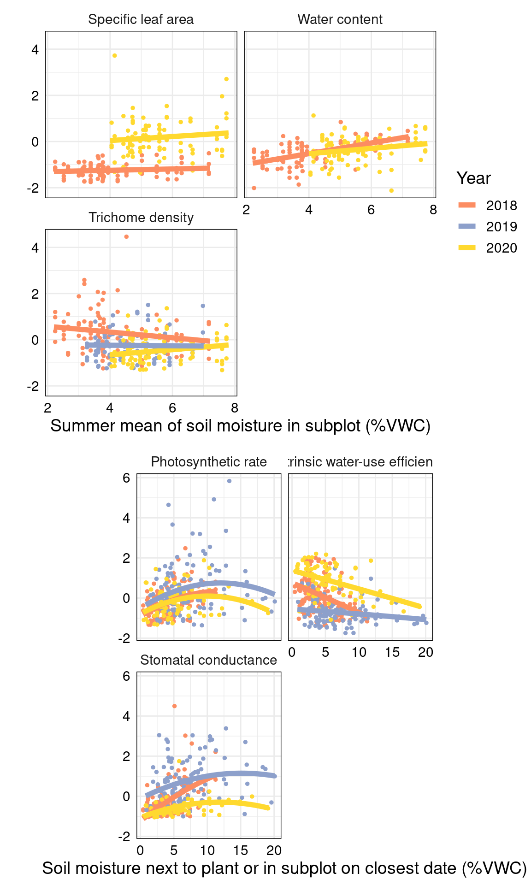
Mortality/flowering selection vs. treatments
step_selection_mod <- function(trait, response, treatment, set, family="binomial", level=0.05) {
re <- ifelse(treatment =="snow", "snow:plot", "plot")
t.plantyr <- list(lt = lt.plantyr.r2, pt = pt.plantyr)[[set]] %>%
rename("trait"=trait)
options(contrasts = c("contr.sum", "contr.poly"))
mod <- glmmTMB(formula(paste(response, "~ trait * year * ", treatment," + (1|",re,")")),
data=t.plantyr, family=family)
droporder <- c(paste0("trait:year:", treatment),
paste0("trait:", treatment),
paste0("year:", treatment),
paste0("trait:year"))
for(term_test in droporder) {
pval <- car::Anova(mod) %>% tidy %>% filter(term==term_test) %>% pull(p.value)
if(pval < level) return(mod)
else mod <- update(mod, formula(paste0(". ~ . -", term_test)))
}
return(mod)
}
mod.selection <-
tibble(response = c("survived","flowered"), treatment=c("water","snow"), set = c("lt", "pt")) %>%
tidyr::expand(response, treatment, set) %>%
full_join(tibble(trait=c(leaftraits, phystraits),
set = c(rep("lt", length(leaftraits)), rep("pt", length(phystraits))))) %>%
mutate(model = pmap(., step_selection_mod),
coefs = map(model, tidy),
tests = map(model, ~ tidy(car::Anova(.x, type=3))))mod.selection %>% group_by(response, treatment) %>%
group_walk(function(.x,.y) {cat(paste("Effect of trait on whether a plant",.y$response,"under different",.y$treatment,"conditions"));
Anova_table(.x %>% unnest(tests)) %>% kable %>% print})Effect of trait on whether a plant flowered under different snow conditions
| term | sla | trichome_density | water_content | photosynthesis | conductance | WUE |
|---|---|---|---|---|---|---|
| (Intercept) | 0.17 | 7.1 x 10-3 | 0.37 | 0.22 | 6.9 x 10-3 | 0.66 |
| trait | 0.74 | 0.25 | 0.67 | 0.52 | 0.23 | 0.12 |
| year | 0.17 | 0.026 | 0.072 | 8.1 x 10-4 | 0.013 | 2.2 x 10-3 |
| snow | 0.69 | 0.57 | 0.75 | 0.73 | 0.67 | 0.82 |
| trait:year | NA | NA | NA | NA | NA | 0.039 |
Effect of trait on whether a plant flowered under different water conditions
| term | sla | trichome_density | water_content | photosynthesis | conductance | WUE |
|---|---|---|---|---|---|---|
| (Intercept) | 0.26 | 0.014 | 0.44 | 0.40 | 0.021 | 0.86 |
| trait | 0.82 | 0.23 | 0.71 | 0.49 | 0.23 | 0.12 |
| year | 0.17 | 0.026 | 0.075 | 3 x 10-4 | 7.1 x 10-3 | 7.8 x 10-4 |
| water | 0.076 | 0.085 | 0.077 | 0.26 | 0.30 | 0.15 |
| trait:year | NA | NA | NA | NA | NA | 2 x 10-2 |
Effect of trait on whether a plant survived under different snow conditions
| term | sla | trichome_density | water_content | photosynthesis | conductance | WUE |
|---|---|---|---|---|---|---|
| (Intercept) | 0.029 | 3.3 x 10-3 | 0.062 | 1.6 x 10-8 | 4.7 x 10-5 | 2.2 x 10-4 |
| trait | 0.76 | 0.74 | 0.26 | 0.18 | 0.32 | 0.90 |
| year | 0.37 | 0.31 | 0.29 | 0.50 | 0.99 | 0.75 |
| snow | 0.85 | 0.80 | 0.67 | 0.43 | 0.34 | 0.43 |
Effect of trait on whether a plant survived under different water conditions
| term | sla | trichome_density | water_content | photosynthesis | conductance | WUE |
|---|---|---|---|---|---|---|
| (Intercept) | 0.026 | 3.3 x 10-3 | 6 x 10-2 | 2.1 x 10-8 | 1.2 x 10-4 | 7.9 x 10-3 |
| trait | 0.77 | 0.70 | 0.26 | 0.19 | 0.72 | 0.80 |
| year | 0.34 | 0.29 | 0.26 | 0.41 | 0.88 | 0.025 |
| water | 0.77 | 0.77 | 0.71 | 0.93 | 5 x 10-2 | 0.48 |
| trait:year | NA | NA | NA | NA | 0.77 | 4 x 10-2 |
| trait:water | NA | NA | NA | NA | 0.019 | 0.30 |
| year:water | NA | NA | NA | NA | 0.63 | 0.082 |
| trait:year:water | NA | NA | NA | NA | NA | 0.044 |
mod.selection %>% unnest(coefs) %>% filter(effect=="ran_pars") %>%
select(trait, group, estimate, response, treatment) %>%
pivot_wider(names_from=group, values_from=estimate) %>% kable(digits=3)| trait | response | treatment | snow:plot | plot |
|---|---|---|---|---|
| sla | flowered | snow | 0.202 | NA |
| trichome_density | flowered | snow | 0.288 | NA |
| water_content | flowered | snow | 0.205 | NA |
| photosynthesis | flowered | snow | 0.233 | NA |
| conductance | flowered | snow | 0.223 | NA |
| WUE | flowered | snow | 0.278 | NA |
| sla | flowered | water | NA | 0.246 |
| trichome_density | flowered | water | NA | 0.351 |
| water_content | flowered | water | NA | 0.241 |
| photosynthesis | flowered | water | NA | 0.241 |
| conductance | flowered | water | NA | 0.236 |
| WUE | flowered | water | NA | 0.287 |
| sla | survived | snow | 0.000 | NA |
| trichome_density | survived | snow | 0.000 | NA |
| water_content | survived | snow | 0.000 | NA |
| photosynthesis | survived | snow | 0.000 | NA |
| conductance | survived | snow | 0.000 | NA |
| WUE | survived | snow | 0.000 | NA |
| sla | survived | water | NA | 0.000 |
| trichome_density | survived | water | NA | 0.000 |
| water_content | survived | water | NA | 0.000 |
| photosynthesis | survived | water | NA | 0.000 |
| conductance | survived | water | NA | 0.000 |
| WUE | survived | water | NA | 0.000 |
# plot_selection <- function(trait, response, treatment, set) {
# list(lt = lt.plantyr.r2, pt = pt.plantyr)[[set]] %>%
# ggplot(aes_string(y=response, x=trait, color=treatment, linetype="year")) +
# geom_point() + geom_smooth(se=F, method="glm", method.args = list(family=binomial)) +
# scale_color_manual(values=c(water_pal, snow_pal))
# }
# mod.selection <- mod.selection %>%
# mutate(plot = pmap((.) %>% select(trait, response, treatment, set), plot_selection))
# do.call(grid.arrange, mod.selection %>% filter(response=="flowered", treatment=="water") %>% pull(plot))
plot_selection_facets <- function(response, treatment, set) {
traits.plot <- list(lt=leaftraits, pt=phystraits)[[set]]
p <- list(lt = lt.plantyr.r2, pt = pt.plantyr)[[set]] %>%
pivot_longer(all_of(traits.plot),names_to="trait") %>%
filter(year!="2020") %>% mutate(year=fct_drop(year)) %>%
ggplot(aes_string(y=response, x="value", color=treatment, linetype="year")) +
facet_wrap(vars(trait), scales="free_x")+
geom_point() + geom_smooth(se=F, method="glm", method.args = list(family=binomial)) +
scale_color_manual(values=c(water_pal, snow_pal)) + theme(legend.position="top") +
labs(linetype="Year",x="",color=c(water="Precipitation",snow="Snowmelt")[treatment]) +
theme_minimal() + theme(text=element_text(color="black"), axis.text = element_text(color="black"),
panel.border = element_rect(fill=NA, colour = "black"),
panel.spacing=unit(0, "pt"), plot.margin = margin(0,0,0,0, "pt"),
legend.position = "top")
if(set =="pt") return(p + guides(linetype=F, color=F))
else return(p)
}
mod.selection.plots <- mod.selection %>% group_by(response, treatment, set) %>% summarize(.groups="drop") %>%
mutate(plots = pmap(., plot_selection_facets))
mod.selection.plots %>% group_by(response, treatment) %>% group_walk( ~ do.call(grid.arrange, .x$plots))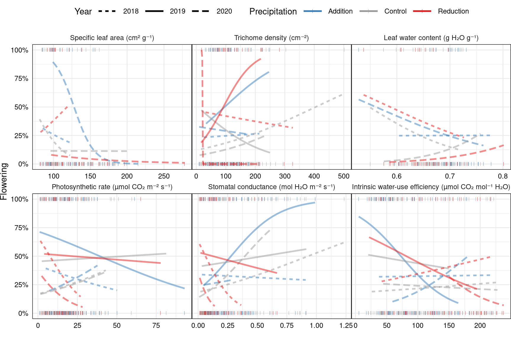
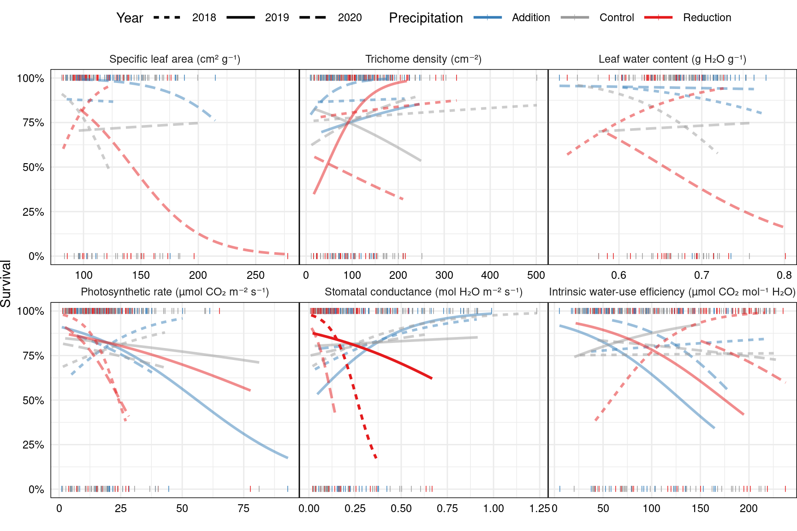
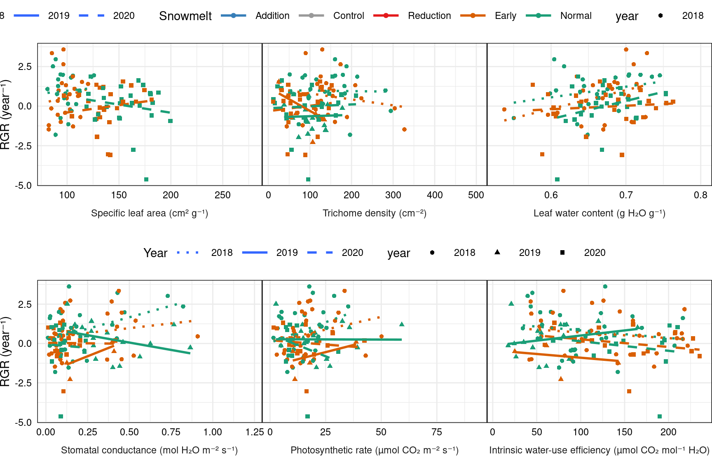
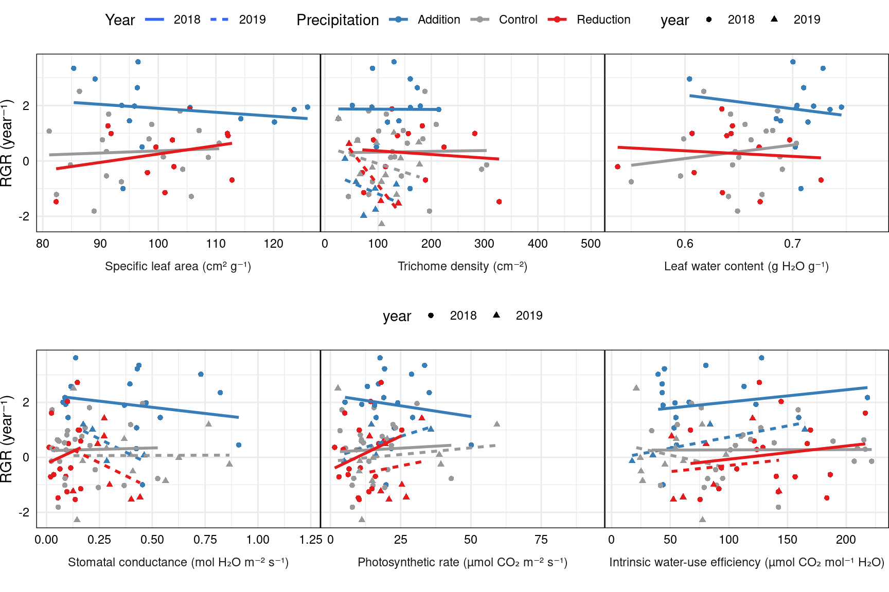
pt.plantyr %>%
pivot_longer(all_of(c("conductance","WUE")),names_to="trait") %>%
filter(year!="2020") %>% mutate(year=fct_drop(year)) %>%
ggplot(aes_string(y="survived", x="value", color="water", linetype="year")) +
facet_wrap(vars(trait), scales="free_x", labeller=as_labeller(traitnames.units))+
geom_point() + geom_smooth(se=F, method="glm", method.args = list(family=binomial)) +
scale_color_manual(values=c(water_pal, snow_pal)) + theme(legend.position="top") +
labs(linetype="Year",x="",color="Precipitation", y="Survival") +
theme_minimal() + theme(text=element_text(color="black"), axis.text = element_text(color="black"),
panel.border = element_rect(fill=NA, colour = "black"),
panel.spacing=unit(8, "pt"), plot.margin = margin(0,0,0,0, "pt"),
legend.position = "top")
ggsave(filename="../surv_water_pt.png", width=7, height=3)
plot_abs(mod.abs, mnps.subplot, floraltraits[1:6]) + #Morphological traits - subplot means
scale_y_continuous(limits=c(-1.7, 2.8), breaks=c(-1:2))
ggsave(filename="../snow_precip_mt.png", width=7, height=4)Multivariate response
mt.morph <- mt[,c("corolla_length", "corolla_width","style_length","anther_max","anther_min","year","VWC")] %>% drop_na(1:5) #drop sepal_width
mt.pca <- prcomp(mt.morph[,-(6:7)], scale.=TRUE)
mt.morph.pca <- mt.morph %>%
bind_cols(as.data.frame(mt.pca$x)) %>%
tibble::rowid_to_column("index") %>%
mutate(x_0=0,y_0=0,
x_1=-corolla_width/2,y_1=corolla_length,
x_2= corolla_width/2,y_2=corolla_length) %>%
pivot_longer(c(starts_with("x"),starts_with("y")), names_to=c(".value", "point"), names_sep="_")
scl <- 100
zoom <- 5.5
mt.pca.vars <- as.data.frame(mt.pca$rotation) %>% rownames_to_column("variable")
mt.pca.labs <- paste0("PC", 1:2, " (", round(100*mt.pca$sdev[1:2]^2/sum(mt.pca$sdev^2), 0), "% explained var.)")
ggplot(mt.morph.pca) + theme_classic() +
geom_polygon(aes(x= x/scl+PC1, y= y/scl+PC2, group=index, color=VWC, fill=VWC)) +
#geom_point(aes(x=PC1, y=PC2, size=sepal_width/2), color="darkgreen") +
geom_point(aes(x=PC1, y=PC2 + anther_min/scl), color="yellow", size=0.3) +
geom_point(aes(x=PC1, y=PC2 + anther_max/scl), color="yellow", size=0.3) +
geom_point(aes(x=PC1, y=PC2 + style_length/scl), color="grey60", size=0.5, shape=4) +
geom_segment(data=mt.pca.vars,aes(x=0, y=0, xend=PC1*zoom, yend=PC2*zoom),
arrow = arrow(length = unit(1/2, "picas")), color="black") +
geom_text(data =mt.pca.vars, aes(label = gsub("_"," ",variable), x = PC1*zoom*1.4, y = PC2*zoom*1.4,
angle = (180/pi) * atan(PC2/PC1), hjust = 0), color="black")+
scale_size_identity() + coord_fixed() +
scale_fill_viridis(direction=-1, option="plasma") + scale_color_viridis(direction=-1, option="plasma") +
labs(x=mt.pca.labs[1], y=mt.pca.labs[2])
ggsave("images/mt_morph_pca_noSW.pdf", height=15, width=20, device=cairo_pdf)
ggplot(mt, aes(x=corolla_length, y=corolla_width, color=VWC)) + scale_color_viridis(direction=-1, option="plasma") + geom_point() + theme_minimal() + geom_smooth()
ggplot(mt, aes(x=corolla_length, y=style_length, color=VWC)) + scale_color_viridis(direction=-1, option="plasma") + geom_point() + theme_minimal() + geom_abline(slope=1, intercept=0)
ggplot(mt, aes(y=style_length / corolla_length, x=VWC, color=VWC)) + scale_color_viridis(direction=-1, option="plasma") + geom_point() + theme_minimal() + geom_abline(slope=0, intercept=1)+ geom_smooth()
ggplot(mt, aes(x=corolla_length, ymax = anther_max, ymin=anther_min, color=VWC)) + scale_color_viridis(direction=-1, option="plasma") + geom_linerange() + theme_minimal()+ geom_abline(slope=1, intercept=0)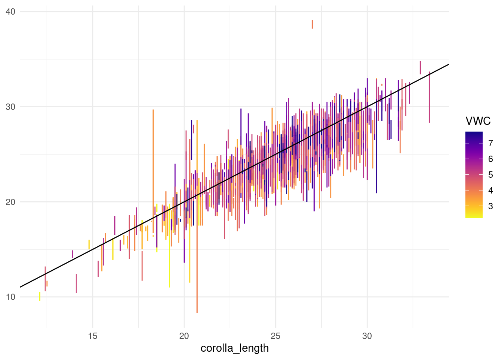
ggplot(mt, aes(y=anther_min / corolla_length, x=VWC, color=VWC)) + scale_color_viridis(direction=-1, option="plasma") + geom_point() + theme_minimal() + geom_smooth()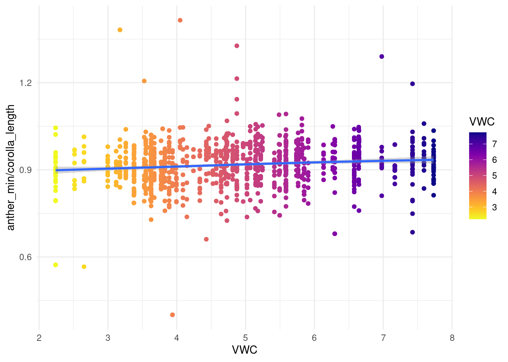
mt.morph.plantyr <- mt.plantyr[,c("corolla_length", "corolla_width","style_length","anther_max","anther_min","year","VWC")] %>% drop_na()
options(contrasts = c("contr.treatment", "contr.poly"))
mt.rda <- rda(scale(select(mt.morph.plantyr, !c(year, VWC))) ~ VWC * year, data=mt.morph.plantyr)
mt.rdaCall: rda(formula = scale(select(mt.morph.plantyr, !c(year, VWC))) ~
VWC * year, data = mt.morph.plantyr)
Inertia Proportion Rank
Total 5.0000 1.0000
Constrained 1.2214 0.2443 5
Unconstrained 3.7786 0.7557 5
Inertia is variance
Eigenvalues for constrained axes:
RDA1 RDA2 RDA3 RDA4 RDA5
1.1502 0.0577 0.0097 0.0034 0.0004
Eigenvalues for unconstrained axes:
PC1 PC2 PC3 PC4 PC5
2.4952 0.6714 0.3995 0.1207 0.0918 anova(mt.rda, by="term") %>% tidy %>% kable(digits=3)| term | df | Variance | statistic | p.value |
|---|---|---|---|---|
| VWC | 1 | 0.569 | 67.195 | 0.001 |
| year | 2 | 0.635 | 37.488 | 0.001 |
| VWC:year | 2 | 0.017 | 0.995 | 0.393 |
| Residual | 446 | 3.779 | NA | NA |
#autoplot(mt.rda)
mt.rda.df <- fortify(update(mt.rda, ~ VWC + year))#drop interaction
ggplot(mapping=aes(x=RDA1, y=RDA2, label=Label)) +
geom_point(data=mt.rda.df %>% filter(Score=="sites") %>% bind_cols(mt.morph.plantyr), aes(color=VWC))+
geom_segment(data=mt.rda.df %>% filter(Label=="VWC"), aes(x=0,y=0,xend=RDA1*3, yend=RDA2*3),
arrow=arrow(length=unit(0.5, "lines")), size=1.5)+
geom_text( data=mt.rda.df %>% filter(Label=="VWC"), aes(x=RDA1*3.5, y=RDA2*3.5, angle=atan(RDA2/RDA1)*180/pi))+
geom_segment(data=mt.rda.df %>% filter(Score=="species"), aes(x=0,y=0,xend=RDA1, yend=RDA2),
arrow=arrow(length=unit(0.5, "lines")))+
geom_text( data=mt.rda.df %>% filter(Score=="species"), aes(x=RDA1*1.9, y=RDA2*1.9, angle=atan(RDA2/RDA1)*180/pi,
label = c(traitnames, c("anther_max"="Max stamen length", "anther_min"="Min stamen length"))[as.character(Label)] %>% str_remove(fixed(" (mm)"))), size=3)+
geom_text(data=mt.rda.df %>% filter(Score=="centroids"), aes(label=str_remove(Label, "year")), fontface=2, size=6)+
scale_color_viridis(direction=-1, option="plasma") + coord_fixed() +
scale_x_continuous(expand=expansion(mult=.16), breaks=c(-2,0,2))+ theme_minimal()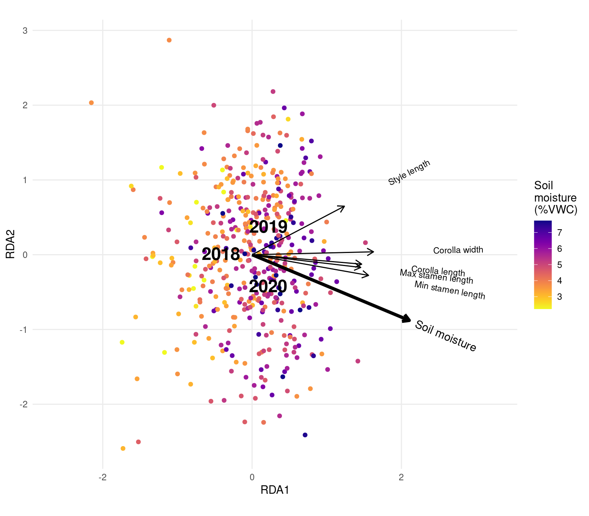
mt.morph.wm <- mt[,c("corolla_length", "corolla_width","style_length","anther_max","anther_min","year","precip_est_mm", "sun_date")] %>% drop_na(1:6) #and nectar (19,20) too
mt.cap.wm <- capscale(scale(mt.morph.wm[,-(6:8)]) ~ precip_est_mm * sun_date, data=mt.morph.wm)
mt.cap.wmCall: capscale(formula = scale(mt.morph.wm[, -(6:8)]) ~ precip_est_mm *
sun_date, data = mt.morph.wm)
Inertia Proportion Rank
Total 5.0000 1.0000
Constrained 0.7785 0.1557 3
Unconstrained 4.2215 0.8443 5
Inertia is mean squared Euclidean distance
Species scores projected from 'scale' 'mt.morph.wm[, -(6:8)]'
Eigenvalues for constrained axes:
CAP1 CAP2 CAP3
0.7579 0.0186 0.0020
Eigenvalues for unconstrained axes:
MDS1 MDS2 MDS3 MDS4 MDS5
2.8507 0.7146 0.4209 0.1399 0.0955 anova(mt.cap.wm, by="term") %>% tidy %>% kable| term | df | Variance | statistic | p.value |
|---|---|---|---|---|
| precip_est_mm | 1 | 0.2405857 | 54.198053 | 0.001 |
| sun_date | 1 | 0.5310090 | 119.623294 | 0.001 |
| precip_est_mm:sun_date | 1 | 0.0069071 | 1.556002 | 0.202 |
| Residual | 951 | 4.2214982 | NA | NA |
#plot CAP without interactions
autoplot(capscale(scale(mt.morph.wm[,-(6:8)]) ~ precip_est_mm + sun_date, data=mt.morph.wm)) + guides(color=F, shape=F)
Phenology
walk(list(ph18.raw, ph19.raw, ph20.raw),
function(ph.raw) {
y = ph.raw$year[1]
p <- ph.raw %>% count(plot, subplot, plotid, plantid, julian) %>% add_count(plantid, name="n_plantid") %>%
mutate(plantid = fct_reorder(plantid, as.integer(factor(paste(plotid, n_plantid))),.desc=T)) %>%
ggplot(aes(julian, plantid, fill=factor(n)))+
geom_tile()+ scale_fill_viridis(option="inferno", discrete=T) +
geom_point(aes(color=subplot, x=median(as.integer(julian))))+ scale_color_manual(values=sample(rainbow(10)))+
geom_point(aes(color=plot, x=median(as.integer(julian))), position=position_nudge(x=-0.3))+
theme_classic() + theme(panel.background = element_rect(fill="grey")) + guides(x=guide_axis(angle = 90)) +
labs(x="Day of year", y="Plant (sorted by subplot)", fill="Observations", color="Plot", title=paste(y,"phenology"))
print(p)})


ggplot(mnps.plantyr, aes(x=flowers_est, y=open)) + geom_point() + facet_wrap(vars(year)) + geom_smooth(method="lm")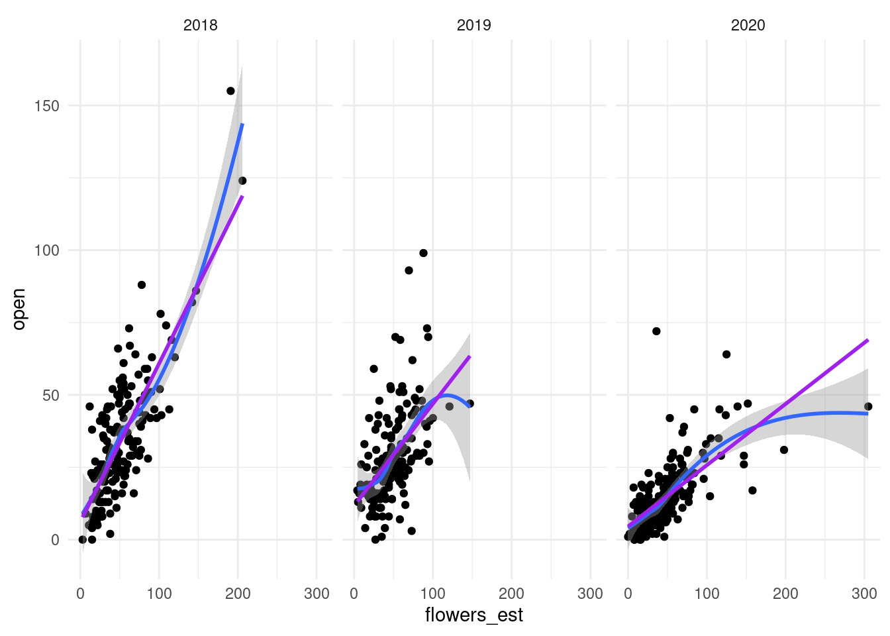
lm(open ~ flowers_est * year, data = mnps.plantyr) %>% emtrends(~year, var="flowers_est") %>% tidy# A tibble: 3 x 6
year flowers_est.trend std.error df statistic p.value
<chr> <dbl> <dbl> <dbl> <dbl> <dbl>
1 2018 0.0343 0.00612 520 5.60 3.39e- 8
2 2019 0.0645 0.00805 520 8.01 7.73e-15
3 2020 0.0353 0.00463 520 7.62 1.21e-13ggplot(ph %>% drop_na(height_cm), aes(x=julian, y=height_cm, shape=snow, color=water))+ geom_point() + geom_path(aes(group=plantid))+
facet_wrap(vars(year), ncol=1)+
geom_vline(data=meltdates, aes(xintercept=sun_date, linetype=snow))+
labs(y="Plant height",
x="Day of year", color="Precipitation", shape="Snow") +
scale_x_continuous(breaks=seq(120,240, by=20))+
scale_color_manual(values=water_pal) + theme_minimal() +
theme(legend.key.size = unit(2, "lines"))
ph %>% group_by(year, snow, water, julian) %>% summarize_at(c("open","buds"), mean, na.rm=T) %>%
ggplot(aes(x=julian, y=open, shape=snow, linetype=snow, color=water))+ geom_point() +
facet_wrap(vars(year), ncol=1)+
geom_path(aes(group=paste(snow, water))) +
geom_vline(data=meltdates, aes(xintercept=sun_date, linetype=snow))+
labs(y="Mean total flowers",
x="Day of year", color="Precipitation", shape="Snow", linetype="Snow") +
scale_x_continuous(breaks=seq(120,240, by=20))+
scale_color_manual(values=water_pal) + scale_linetype_manual(values=c(2,1)) + theme_minimal() +
theme(legend.key.size = unit(2, "lines"))
ph %>% group_by(year, snow, water, julian) %>% summarize_at("flowering", mean, na.rm=T) %>%
ggplot(aes(x=julian, y=flowering, shape=snow, linetype=snow, color=water))+ geom_point() +
facet_wrap(vars(year), ncol=1)+
geom_path(aes(group=paste(snow, water))) +
geom_vline(data=meltdates, aes(xintercept=sun_date, linetype=snow))+
labs(y="Proportion flowering",
x="Day of year", color="Precipitation", shape="Snow", linetype="Snow") +
scale_x_continuous(breaks=seq(120,240, by=20))+
scale_y_continuous(labels = scales::percent)+
scale_color_manual(values=water_pal) + scale_linetype_manual(values=c(2,1)) + theme_minimal() +
theme(legend.key.size = unit(2, "lines"))
ph %>% group_by(year, snow, water, julian) %>% summarize_at("eggs", mean, na.rm=T) %>%
ggplot(aes(x=julian, y=eggs, shape=snow, linetype=snow, color=water))+ geom_point() +
facet_wrap(vars(year), ncol=1)+
geom_path(aes(group=paste(snow, water))) +
geom_vline(data=meltdates, aes(xintercept=sun_date, linetype=snow))+
labs(y="Mean total eggs",
x="Day of year", color="Precipitation", shape="Snow", linetype="Snow") +
scale_x_continuous(breaks=seq(120,240, by=20))+
scale_color_manual(values=water_pal) + scale_linetype_manual(values=c(2,1)) + theme_minimal() +
theme(legend.key.size = unit(2, "lines"))
ph %>% group_by(year, snow, water, julian) %>% summarize_at("has_egg", mean, na.rm=T) %>%
ggplot(aes(x=julian, y=has_egg, shape=snow, linetype=snow, color=water))+ geom_point() +
facet_wrap(vars(year), ncol=1)+
geom_path(aes(group=paste(snow, water))) +
geom_vline(data=meltdates, aes(xintercept=sun_date, linetype=snow))+
labs(y="Proportion of plants with eggs",
x="Day of year", color="Precipitation", shape="Snow", linetype="Snow") +
scale_x_continuous(breaks=seq(120,240, by=20))+
scale_y_continuous(labels = scales::percent)+
scale_color_manual(values=water_pal) + scale_linetype_manual(values=c(2,1)) + theme_minimal() +
theme(legend.key.size = unit(2, "lines"))
Floral display size
2020
ggplot(ph.plantid, aes(x=height_cm, y=open, color=water)) + geom_point() + geom_smooth(method="lm", se=F) + scale_color_manual(values=water_pal) + facet_wrap(vars(year), nrow=1) +
labs(x="Mean inflorescence height (cm)", y="Mean number of open flowers", color="Precipitation")
ggplot(ph.plantid, aes(x=water, color=snow, y = height_cm)) +
labs(x="Precipitation", y="Mean inflorescence height (cm)", color="Snowmelt") +
geom_boxplot() + scale_color_manual(values=snow_pal) + facet_wrap(vars(year), nrow=1)
ggplot(ph.plantid, aes(x=VWC, y=height_cm, color=year)) + geom_point() + geom_smooth(se=F) +
scale_color_manual(values=year_pal) + labs(x="Mean VWC", y="Mean inflorescence height (cm)") 
ggplot(ph.plantid, aes(x=water, color=snow, y = open)) +
labs(x="Precipitation", y="Mean number of open flowers", color="Snowmelt") +
geom_boxplot() + scale_color_manual(values=snow_pal) + facet_wrap(vars(year), nrow=1)
ggplot(ph.plantid, aes(x=VWC, y=open, color=year)) + geom_point() + geom_smooth(se=F)+
scale_color_manual(values=year_pal) + labs(x="Mean VWC", y="Mean number of open flowers")
Seeds
ggplot(sds %>% drop_na(plot), aes(color=water, x=fruits, y=seeds)) + geom_point() + geom_smooth(se=F) +
scale_color_manual(values=water_pal) + facet_wrap(vars(year), nrow=1) + theme_minimal() +
labs(x="Counted fruits", y="Counted seeds", color="Precipitation")
for(tr in seedtraits) {
print(ggplot(sds %>% drop_na(plot), aes_string(tr, x="water", color="snow")) + geom_boxplot() +
scale_color_manual(values=snow_pal) + facet_wrap(vars(year), nrow=1) +
scale_y_continuous(trans=ifelse(tr %in% c("seeds_est", "fruits_nonaborted"),"sqrt","identity"))+
labs(x="Precipitation", y=traitnames[[tr]], color="Precipitation") +
guides(x=guide_axis(angle = 90)))
print(ggplot(sds, aes_string(tr, x="VWC", color="year")) + geom_point() + geom_smooth(se=F) +
scale_color_manual(values=year_pal) +
scale_y_continuous(trans=ifelse(tr %in% c("seeds_est", "fruits_nonaborted"),"sqrt","identity"))+
labs(x="Summer mean of soil moisture in subplot (VWC)", y=traitnames[[tr]], color="Year"))
}


Fruiting phenology (2020)
ggplot(sds20.date.zeroed, aes(x=julian, y=fruits_nonaborted, color=water, shape=snow, linetype=snow))+geom_jitter(width=2, height=0) + stat_summary(fun="mean", geom="line") + scale_y_sqrt() + scale_color_manual(values=water_pal)+
labs(y="Nonaborted fruits", x="Day of year", color="Precipitation", shape="Snow", linetype="Snow")+ scale_linetype_manual(values=c(2,1)) + theme_minimal() +
theme(legend.key.size = unit(2, "lines"))
ggplot(sds20.date.zeroed, aes(x=julian, y=seeds, color=water, shape=snow, linetype=snow))+geom_jitter(width=2, height=0) + stat_summary(fun="mean", geom="line") + scale_y_sqrt() + scale_color_manual(values=water_pal)+
labs(y="Seeds", x="Day of year", color="Precipitation", shape="Snow", linetype="Snow")+ scale_linetype_manual(values=c(2,1)) + theme_minimal() +
theme(legend.key.size = unit(2, "lines"))
ggplot(sds20.date.zeroed, aes(x=julian, y=prop_infested, color=water, shape=snow, linetype=snow))+geom_jitter(width=2, height=0) + stat_summary(fun="mean", geom="line") + scale_color_manual(values=water_pal)+
labs(y="Proportion of nonaborted fruits infested", x="Day of year", color="Precipitation", shape="Snow", linetype="Snow")+ scale_linetype_manual(values=c(2,1)) +
scale_y_continuous(labels = scales::percent)+ theme_minimal() +
theme(legend.key.size = unit(2, "lines"))
sds20.date.zeroed %>% group_by(snow, water, julian) %>% summarize_at("fruiting", mean, na.rm=T) %>%
ggplot(aes(x=julian, y=fruiting, shape=snow, linetype=snow, color=water))+ geom_point() +
geom_path(aes(group=paste(snow, water))) +
labs(y="Proportion fruiting (nonaborted fruits)",
x="Day of year", color="Precipitation", shape="Snow", linetype="Snow") +
scale_y_continuous(labels = scales::percent)+
scale_color_manual(values=water_pal) + scale_linetype_manual(values=c(2,1)) + theme_minimal() +
theme(legend.key.size = unit(2, "lines"))